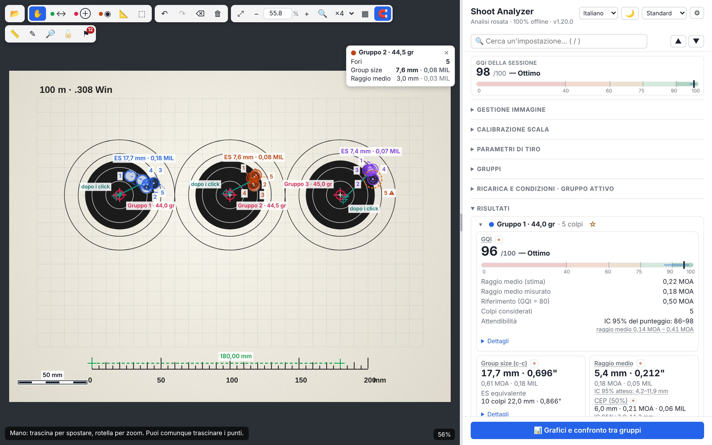
Shoot Analyzer prende la foto di un bersaglio già sparato e ti dice, con numeri e disegni, quanto è stretta la rosata, dove è finita rispetto al punto mirato e quanti click devi dare alle torrette per centrare.
Al poligono di solito si guarda il cartoncino, si misura «a occhio» o con il calibro il gruppo più largo e si annota. Funziona, ma ci sono tre problemi: la misura col calibro è lenta, a occhio si sbaglia facilmente il centro del gruppo e, soprattutto, un solo numero (il group size) racconta poco. Due gruppi da 20 mm possono essere molto diversi: uno con quattro colpi in un buco e uno «scappato», un altro con cinque colpi distribuiti uniformemente.
Con l'applicazione fai così: fotografi il bersaglio, indichi una distanza nota sulla foto (per esempio due tacche di un righello), clicchi il punto che hai mirato e il centro di ogni foro. Da quel momento l'applicazione calcola tutto da sola e aggiorna i risultati a ogni clic.
L'applicazione è un unico file, index.html. Lo apri con un doppio clic: si avvia nel browser (Chrome, Edge, Firefox o Safari) e funziona anche senza connessione. Puoi anche usare la versione pubblicata su internet, che è identica. Nessun dato esce dal tuo computer: foto e misure restano nel browser o nei file che salvi tu.
La prima volta prova con una foto qualsiasi di un tuo bersaglio, seguendo il capitolo 4 passo per passo: in cinque minuti avrai i primi risultati e capirai la logica. Le funzioni avanzate puoi scoprirle dopo, con calma.
In tutto il manuale useremo due idee diverse, che spesso si confondono:
L'applicazione misura separatamente le due cose. Questo è importante: un gruppo «lontano dal centro» non è un gruppo cattivo, è solo un gruppo che chiede qualche click.
L'applicazione misura sulla foto: una buona foto vale più di qualsiasi calcolo. Bastano pochi accorgimenti.
Un bersaglio da 100 m largo 32 cm fotografato con un telefono a 12 megapixel (4000 pixel di larghezza) occupando tutta la foto dà circa 12 pixel per millimetro: un foro di .308 (7,8 mm) misura quasi 100 pixel. Ottimo. Se invece fotografi il bersaglio da lontano e occupa un quarto della foto, il foro misura 25 pixel: ancora buono. Sotto i 10 pixel l'applicazione ti avvisa che la risoluzione è bassa.
Se tiri spesso sullo stesso tipo di bersaglio, stampaci sopra (o incollaci) un piccolo righello o due crocette a distanza nota, per esempio 100 mm: la calibrazione diventa un gesto di due secondi e sempre ugualmente precisa.
Lo schermo è diviso in due parti. A sinistra c'è la foto, con sopra la barra degli strumenti; a destra il pannello con tutte le sezioni (si allarga o si stringe trascinando la linea verticale che lo separa dalla foto).
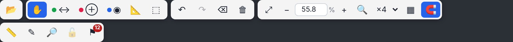
Dalla versione 1.17 la barra mostra solo le icone, per lasciare più spazio alla foto. Fermando il mouse su un pulsante compare il suo nome, che cosa fa e il tasto rapido tra parentesi; i lettori di schermo leggono il nome del pulsante. I pulsanti del pannello a destra hanno invece ancora il testo.
| Pulsante | A che cosa serve |
|---|---|
| Carica foto | Apre la foto del bersaglio (JPG, PNG, WEBP, BMP). Puoi anche trascinare il file sulla finestra. |
| Mano 1 | Sposta la foto trascinandola; la rotella del mouse ingrandisce. Anche in questa modalità puoi trascinare i punti già inseriti. |
| Scala 2 | Clicchi i due estremi di una distanza nota (calibrazione, capitolo 5). |
| Mira 3 | Clicchi il punto che hai mirato. Il cursore mostra una croce che si allunga fino ai bordi della foto, comoda per allinearti alle righe del bersaglio. |
| Foro 4 | Clicchi il centro di ciascun foro. Il cerchio tratteggiato sul cursore è grande quanto il calibro: ti aiuta a centrare il foro e a verificare che la scala sia giusta. |
| Raddrizza 5 · Prospettiva 6 | Raddrizzano una foto storta o di sbieco (capitolo 13). |
| Undo / Redo | Annulla e ripristina (Ctrl+Z, Ctrl+Y). Si torna indietro di molti passi. |
| Elimina ultimo · Tutto | Toglie l'ultimo foro (o la mira) del gruppo attivo; «Tutto» cancella tutti i punti, dopo una conferma. |
| Adatta F · zoom % | «Adatta» rimette la foto intera nella finestra. Accanto, il campo dello zoom: scrivi una percentuale e premi Invio, o usa − e + (anche i tasti − e +). Comodo con un touchpad o senza rotella. |
| Lente L · ×4 | Una lente di ingrandimento segue il cursore mentre clicchi i punti: indispensabile per centrare bene i fori. Il menu sceglie l'ingrandimento (da ×2 a ×12). |
| Griglia G | Disegna una griglia in MIL o MOA centrata sulla mira (capitolo 10). |
| Snap M | Quando clicchi vicino a un foro, il punto si aggancia da solo al centro della macchia scura del foro. Tieni premuto Alt per cliccare senza aggancio. |
| Righello R · Nota N | Misura libera tra due punti e annotazioni sulla foto (capitolo 14). |
| Dettaglio D · Blocca K | Finestra con un ingrandimento fisso; blocco dell'elemento selezionato (capitolo 14). |
| ⚑ Colpi da rivedere V | Apre la coda dei fori da controllare e centra il primo sulla foto (capitolo 9). Il numero rosso è quanti ne restano. |
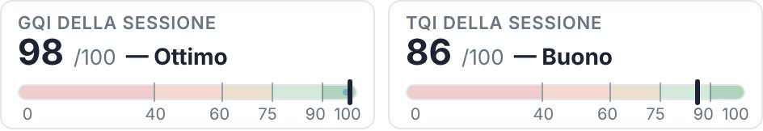
In cima al pannello, appena ci sono gruppi con almeno 2 fori, c'è il riepilogo della sessione: il punteggio GQI di tutti i gruppi insieme e, se hai acceso il TQI e i gruppi hanno il punto di mira, il TQI accanto. Mostra solo il numero, il giudizio e la barra; un clic porta alle schede complete in fondo ai Risultati (capitolo 8). Scorre insieme al pannello.
Le sezioni del pannello si aprono e si chiudono con un clic sul titolo. All'avvio è aperta solo «Calibrazione scala»: le altre si aprono quando servono. In ordine:
| Sezione | Contenuto |
|---|---|
| Gestione immagine | Rotazione della foto, ritaglio, distorsione dell'obiettivo, correzione della prospettiva, ognuna nel suo riquadro. |
| Calibrazione scala | Scala a 2 punti (distanza nota, stato e semaforo di qualità), riferimento di controllo, scala disegnata sulla foto. |
| Parametri di tiro | Distanza, calibro e mirino; incertezza di marcatura e livello degli intervalli di confidenza; che cosa disegnare sulla foto. |
| Gruppi | Le rosate presenti sulla foto; quella evidenziata è il «gruppo attivo». |
| Ricarica e condizioni | Profili di ricarica; munizione, condizioni (con il quadrante del vento), colpi e note del gruppo attivo. |
| Risultati | Le misure di ogni gruppo, in forma di schede («card»); ogni gruppo si può chiudere. |
| Zone di punteggio | Anelli di bersagli ISSF, sagome IPSC/IDPA/silhouette, punteggio di ogni foro. |
| Probabilità di colpire | Quanti colpi su 100 entrerebbero in un bersaglio di una certa misura. |
| Punti del gruppo attivo | La tabella di tutti i punti: coordinate, distanze, click, esclusione e blocco dei colpi. |
| Note sull'immagine | Le annotazioni numerate N1, N2… legate a un foro o a una zona del bersaglio. |
| Dati | Result Card e report, sessione, testo e CSV, archivio delle sessioni, bersaglio di autoverifica. |
| Guida rapida e scorciatoie | Un promemoria sempre a portata di mano. |
Dentro le sezioni con più funzioni ogni gruppo di comandi sta in un riquadro con un titolo e un'icona (per esempio, in «Parametri di tiro»: «Distanza, calibro e mirino», «Misura e statistica», «Disegni sulla foto»): così si capisce a colpo d'occhio dove finisce una cosa e ne comincia un'altra.
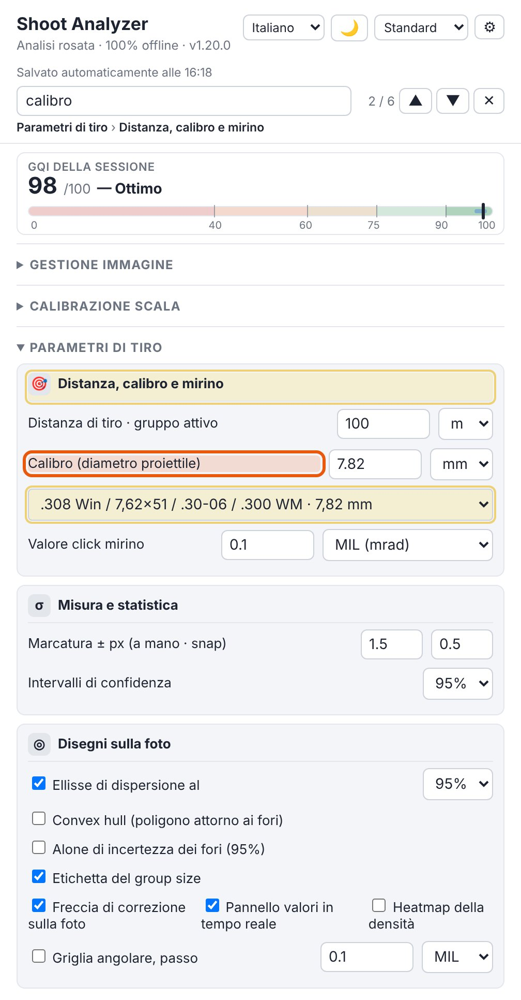
Le impostazioni sono tante. Invece di aprire le sezioni una per una, scrivi una parola nella casella di ricerca in cima al pannello (oppure premi /, che ci porta il cursore): «calibro», «griglia», «CSV», «vento»… Non servono maiuscole né accenti. Si illuminano in giallo tutte le impostazioni che contengono la parola nel nome, in una voce del menu o nel suggerimento che compare passando il mouse; quella corrente è in arancio e il pannello scorre fino a lei, aprendo la sezione se era chiusa. A destra della casella vedi a quale occorrenza sei (per esempio «2 / 7»), sotto la sezione e il riquadro in cui si trova e, se la parola è solo nel suggerimento, il testo del suggerimento.
La ricerca riguarda solo le impostazioni e i comandi, non i valori calcolati (risultati, tabella dei punti). Le voci che in quel momento non si applicano non vengono contate: «Fattore di potenza», per esempio, compare solo dopo aver scelto un bersaglio IPSC. Se l'impostazione è in una sezione che hai nascosto con ⚙, la sezione viene mostrata finché ci sei sopra, senza cambiare il layout salvato.
In fondo al pannello il pulsante 📊 Grafici e confronto tra gruppi (tasto A) apre la vista dei grafici a schermo intero (capitolo 12). In alto ci sono la lingua (italiano, inglese o russo), il tema chiaro o scuro, la densità delle informazioni e il pulsante ⚙ per riordinare le sezioni (capitolo 16).
Vediamo tutto il percorso con il bersaglio di esempio: un foglio da 100 m con tre visuel, tre gruppi da 5 colpi di .308 Winchester con tre cariche diverse.
Premi 📂 Carica foto (oppure Ctrl+O, oppure trascina il file sulla finestra). La foto compare intera; l'applicazione passa da sola allo strumento «Scala», perché la prima cosa da fare è dirle quanto è grande la foto nella realtà.
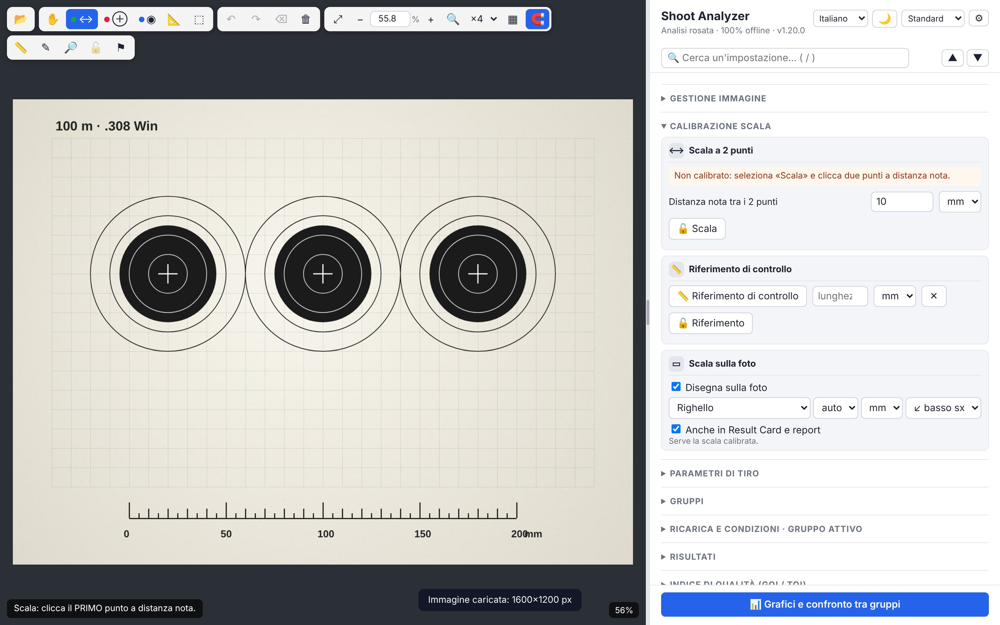
Con lo strumento Scala clicca due punti di cui conosci la distanza reale: qui l'inizio del righello (0) e la tacca dei 180 mm. Scrivi poi la distanza nel campo «Distanza nota tra i 2 punti» e scegli l'unità (mm, cm o pollici). Una linea verde tratteggiata con la misura conferma la calibrazione.
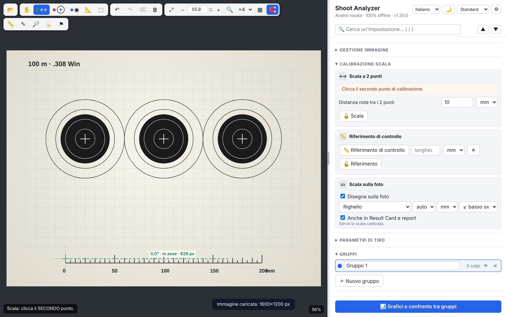
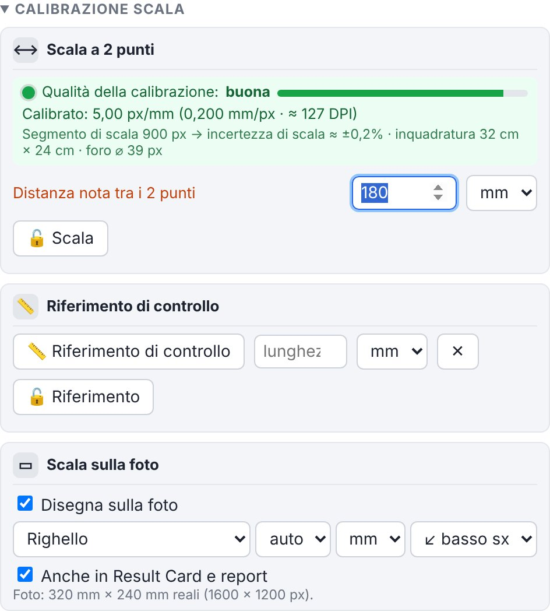
Apri «Parametri di tiro» e inserisci almeno: distanza (100 m), calibro (scegli «.308 Win» dal menu: imposta da solo 7,82 mm) e valore del click della tua ottica (0,1 MIL, oppure 1/4 di MOA). Senza distanza e click l'applicazione misura comunque la rosata, ma non può darti la correzione.
Premi 3 (strumento Mira) e clicca il punto che hai mirato, di solito il centro del visuel. Le linee tratteggiate che partono dal cursore arrivano fino ai bordi della foto: allineale alle righe o agli anelli del bersaglio per trovare il centro con precisione.
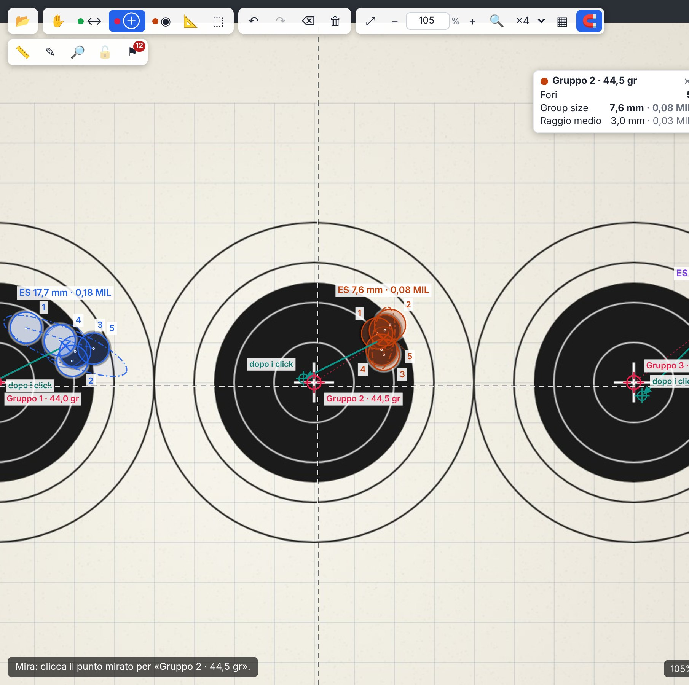
Premi 4 (strumento Foro) e clicca il centro di ogni foro. La lente ti aiuta a essere preciso; con lo Snap attivo il punto si aggancia da solo al centro della macchia del foro. A ogni clic i risultati si aggiornano e il pannello in alto a destra della foto mostra subito numero di fori, group size e raggio medio.
Se due colpi sono finiti nello stesso foro (o quasi), clicca il secondo tenendo premuto Alt: così l'applicazione non pensa che tu voglia spostare il punto già esistente. Un foro sbagliato si sposta trascinandolo, si cancella con il tasto destro del mouse.
La sezione «Risultati» mostra le schede del gruppo: la dimensione della rosata, la sua dispersione, la correzione in click. Nell'esempio il gruppo 1 è largo 17,7 mm (0,18 MIL) e la correzione dice 1 click GIÙ e 2 click SINISTRA. Il capitolo 8 spiega ogni numero.
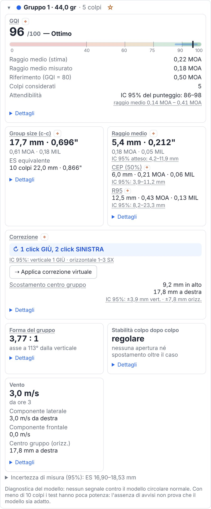
Per un secondo gruppo sulla stessa foto premi ＋ Nuovo gruppo nella sezione «Gruppi»: ha un colore diverso, il suo punto di mira e i suoi fori. Infine salva con 🗜 Salva sessione ZIP nella sezione «Dati»: un unico file con foto e misure che potrai riaprire quando vuoi.
La scala dice all'applicazione quanti pixel della foto corrispondono a un millimetro reale. Tutte le misure in millimetri, MOA e MIL dipendono da lei: è il passaggio più importante.
Dopo il primo clic, una linea tratteggiata va dal punto al cursore con l'angolo rispetto all'orizzontale e lo scarto dall'asse più vicino (verde entro 0,5°, poi giallo e rosso). Serve a controllare che la misura segua davvero la riga del righello o della griglia: se la tacca è orizzontale e la linea è «2,3° fuori asse», stai cliccando la tacca sbagliata o la foto è storta.
Calibri su un segmento di 150 pixel: l'incertezza è circa ±0,9%. Un gruppo da 20 mm sarà misurato tra 19,8 e 20,2 mm solo per colpa della scala. Se usi un segmento di 900 pixel l'incertezza scende a ±0,16% e lo stesso gruppo è misurato al centesimo di millimetro.
| Colore | Che cosa significa |
|---|---|
| Verde | Incertezza della scala entro ±0,5%: puoi fidarti delle misure. |
| Giallo | Incertezza fino a ±1%, oppure i fori sono piccoli nella foto (meno di 8 pixel). Le misure vanno bene per il tiro sportivo, ma potresti fare meglio. |
| Rosso | Incertezza oltre l'1%, oppure un controllo segnala un probabile errore (vedi sotto). Ricontrolla prima di fidarti dei numeri. |
Sotto il semaforo l'applicazione mostra anche l'inquadratura reale della foto (per esempio «32 cm × 24 cm»). Serve a scoprire gli errori di unità: se scrivi 180 pensando ai millimetri ma l'unità è «cm», la foto risulterebbe larga più di 3 metri e l'applicazione ti avvisa.
Diametro dei fori. Se hai inserito il calibro, l'applicazione misura nella foto il diametro dei fori e lo confronta con il calibro. Nella carta i fori sono di solito un po' più piccoli della palla, quindi un rapporto tra il 70% e il 130% è normale; fuori da questo intervallo è probabile che la scala, la sua unità o il calibro siano sbagliati.
Questo controllo ha un limite: due o più fori che si toccano diventano nella foto un'unica macchia, più grande di un foro. Con gruppi molto stretti (proprio i più belli!) l'avviso può quindi scattare anche se la scala è giusta. In quel caso verifica la scala con il riferimento di controllo: se torna, puoi ignorare l'avviso sul diametro.
Riferimento di controllo. Il pulsante 📏 Riferimento di controllo ti fa cliccare un'altra lunghezza nota (per esempio il diametro di un anello). L'applicazione la misura con la scala attuale e ti dice se torna. È un ottimo modo per verificare una calibrazione importante, per esempio prima di una gara. I suoi estremi si possono trascinare; la ✕ accanto alla lunghezza (o Canc sull'estremo selezionato) lo elimina senza toccare la scala.
Una volta controllata, puoi bloccare la scala con 🔓 Scala (e il riferimento con 🔓 Riferimento): i due punti non si spostano più per un trascinamento accidentale e un clic in modalità Scala non la rifà, finché non la sblocchi (capitolo 14).
Senza calibrazione l'applicazione lavora in pixel: vedi la forma del gruppo e i grafici, ma nessuna misura in millimetri, MOA o MIL e nessuna correzione in click.
Pochi campi, ma ognuno cambia qualcosa di preciso. Qui vediamo che cosa e perché.
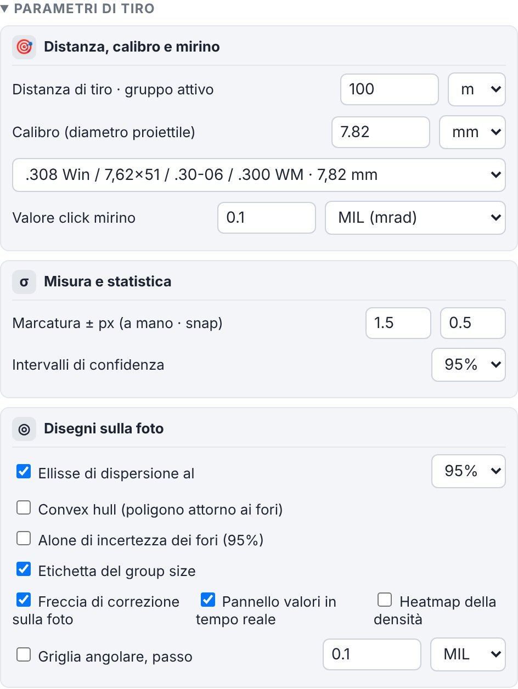
Ogni gruppo ha la sua distanza (un nuovo gruppo parte da quella del gruppo attivo). La distanza non cambia le misure in millimetri, ma serve per tutto ciò che è un angolo: MOA, MIL e quindi i click. Lo stesso gruppo da 10 mm vale 0,1 MIL a 100 m e 0,05 MIL a 200 m.
Un MIL è un millimetro ogni metro di distanza: a 100 m vale 100 mm (10 cm), a 300 m 300 mm. Un MOA vale circa 29 mm a 100 m (circa 1 pollice a 100 yard). Se hai un'ottica da 0,1 MIL per click, a 100 m ogni click sposta il colpo di 10 mm; a 50 m di 5 mm.
È il diametro della palla (non dell'anima della canna): il menu ha i calibri più comuni, oppure scrivi il valore. Il calibro serve a:
Quanto si sposta il colpo per ogni click della torretta: 0,1 MIL, 1/4 MOA, 1/8 MOA e così via. Serve solo per tradurre la correzione in click. Sbagliarlo significa dare il doppio o la metà dei click necessari: controllalo sul manuale della tua ottica.
Quanto pensi di sbagliare cliccando il centro di un foro: 1,5 pixel a mano e 0,5 pixel con lo snap sono valori ragionevoli. Servono solo per l'incertezza di misura (capitolo 8): non cambiano le misure.
Le caselle «Ellisse di dispersione», «Convex hull», «Etichetta del group size», «Freccia di correzione», «Pannello valori in tempo reale», «Heatmap della densità» e «Griglia angolare» accendono e spengono i disegni sulla foto (capitolo 10). Non cambiano nessun numero.
Scegli 90, 95 o 99%. Più alto è il livello, più larghi sono gli intervalli: «sono più sicuro, ma dico una cosa meno precisa». Il 95% è lo standard.
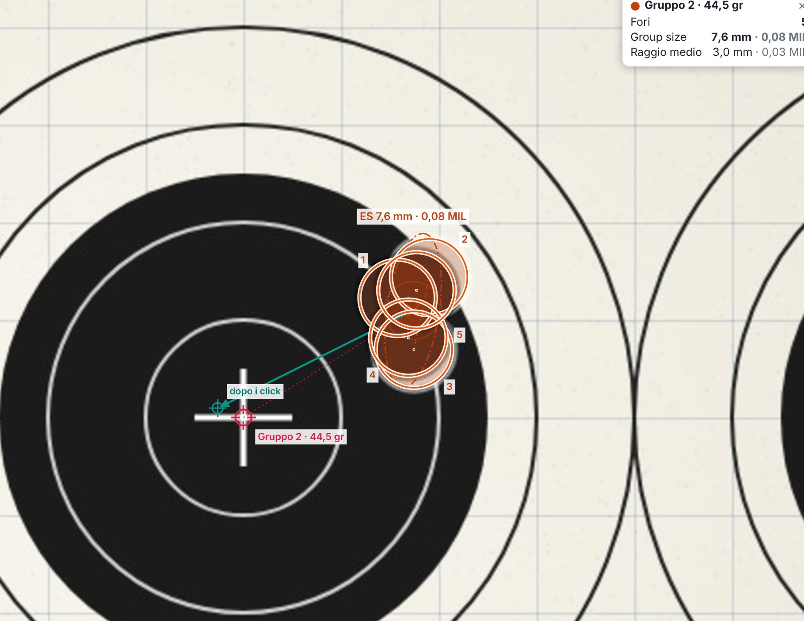
Quando passi con il mouse su un campo del pannello, o ci entri per scrivere, la foto mostra in arancio l'elemento a cui il campo si riferisce, con una riga di spiegazione: la distanza della scala illumina i punti A e B e il segmento misurato; il calibro disegna il foro reale su ogni foro; la distanza di tiro un cerchio di 1 MIL (o 1 MOA) attorno al centro del gruppo; il valore del click due segmenti lunghi un click; la marcatura i cerchi di incertezza al 95%; la prospettiva il rettangolo usato. È solo un disegno: non cambia nulla.
Distanza, calibro e valore click si dimenticano facilmente quando si cambia arma o poligono. Se un risultato sembra strano (correzioni enormi, cerchio del foro grande come mezzo visuel), controlla per prima cosa questi tre campi.
Un gruppo è una rosata: il suo punto di mira e i suoi fori. Sulla stessa foto puoi averne quanti vuoi (tre cariche diverse, tre distanze, prima e dopo una correzione). Il gruppo attivo è quello evidenziato nella sezione «Gruppi»: i nuovi punti vanno a lui. Cliccando un gruppo nell'elenco diventa attivo; la ✕ lo elimina; il nome si modifica direttamente. L'occhio 👁 nasconde il gruppo sulla foto (fori, mira e disegni): utile quando le rosate sono vicine o sovrapposte. I calcoli, il confronto, la Result Card e il report non cambiano; un nuovo punto aggiunto al gruppo lo rende di nuovo visibile.
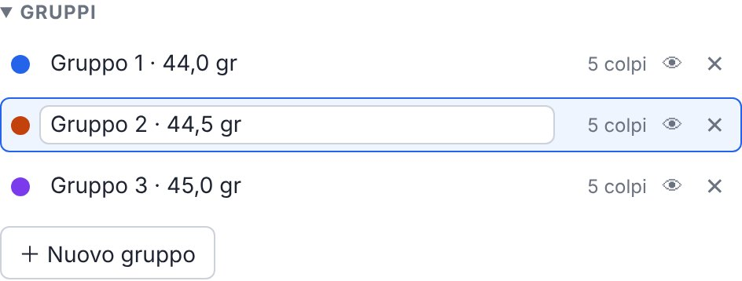
Per ogni gruppo puoi annotare data, bossolo, polvere e carica, palla, salto dalle righe (la distanza della palla dall'inizio della rigatura), innesco, meteo, temperatura, umidità, pressione, vento, colpi sparati, colpi di scaldacanna e note. Non sono obbligatori, ma valgono oro: finiscono nella Result Card, nel report e nei CSV, e permettono i grafici «Precisione e ricarica», «Correlazioni» e la dope card filtrata per munizione.
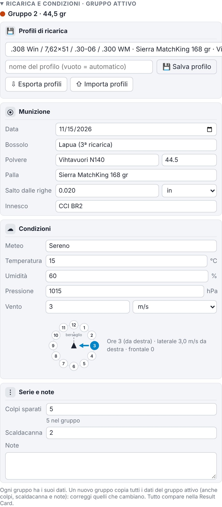
Quando crei un nuovo gruppo, copia tutti i dati del gruppo attivo: se la sessione è la stessa, devi correggere solo ciò che cambia (per esempio la carica).
Se usi sempre le stesse cartucce non serve riscrivere tutto ogni volta. Compila bossolo, polvere, carica, palla, salto e innesco, scegli il calibro e premi 💾 Salva profilo. Se non scrivi un nome, l'applicazione lo compone da sola, per esempio «.308 Win · Sierra MatchKing 168 gr · Vihtavuori N140 44,5 gr». La prossima volta sceglilo dal menu: i dati vengono copiati nel gruppo attivo e il calibro impostato. Data, meteo, vento e note non fanno parte del profilo, perché cambiano ogni giorno.
Il vento si indica come le ore di un orologio, guardando verso il bersaglio: ore 12 è vento che arriva dal bersaglio verso di te (contro), ore 3 da destra, ore 6 alle spalle (a favore), ore 9 da sinistra. Clicca l'ora sul quadrante; un secondo clic la toglie. Accanto vedi subito come si divide il vento:
Annotare vento e temperatura gruppo per gruppo permette poi, nei grafici «Correlazioni», di vedere quanto il vento laterale ha spostato i tuoi colpi e quanto la temperatura cambia l'alzo necessario: informazioni che valgono per la prossima gara.
L'applicazione non calcola la deriva teorica del vento: servirebbero coefficiente balistico, velocità e condizioni atmosferiche. La scheda «Vento» mostra il vento che hai inserito, le sue componenti e lo scostamento orizzontale misurato del gruppo, che comprende anche la taratura dell'ottica.
Ogni gruppo ha le sue schede. Ognuna mostra in grande il valore principale; con «Dettagli» si aprono i valori secondari (e restano aperti finché non li chiudi).
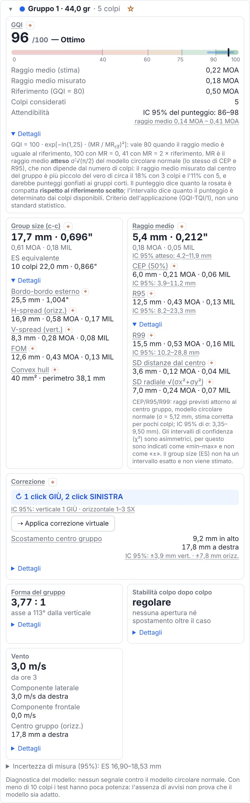
Con più gruppi i risultati si allungano: un clic sul titolo di un gruppo (o su ▾) lo chiude, e resta una riga con group size, raggio medio e GQI. Un altro clic lo riapre. Lo stato resta finché lavori sulla stessa foto; i gruppi nuovi si aprono.
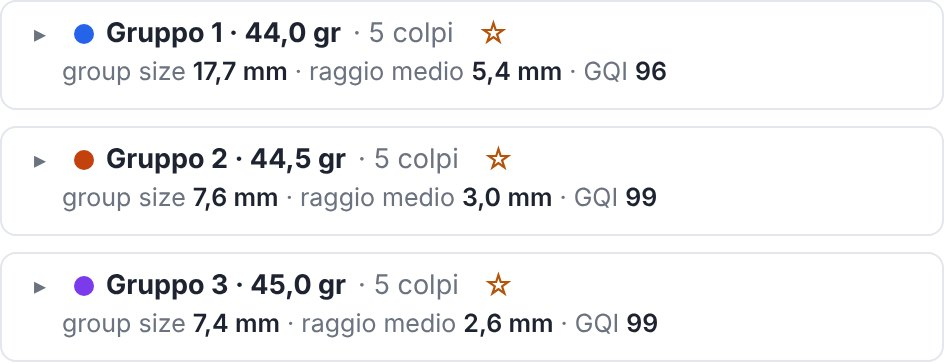
È la misura «classica»: la distanza tra i centri dei due fori più lontani (in inglese Extreme Spread, ES). La scheda la dà in millimetri, pollici, MOA e MIL. Nel dettaglio trovi anche il bordo-bordo esterno, cioè quanto misureresti col calibro dall'esterno dei due fori (centro-centro + calibro).
Pregio: è facile e tutti la capiscono. Difetto: dipende da due soli colpi e cresce con il numero di colpi. Un gruppo da 3 colpi sembra sempre migliore di uno da 10 della stessa arma. Per questo la scheda mostra l'ES equivalente: quanto sarebbe largo in media lo stesso gruppo se avessi sparato 5 o 10 colpi.
Il gruppo 1 dell'esempio, 5 colpi, ha ES 17,7 mm. L'applicazione indica «ES equivalente 10 colpi: 22,0 mm». Vuol dire: se domani spari 10 colpi con la stessa arma e la stessa munizione, aspettati un gruppo intorno ai 22 mm, non ai 17,7. Non è un peggioramento: è la statistica.
La distanza media dei fori dal centro del gruppo. Usa tutti i colpi, non solo i due peggiori, quindi è più stabile del group size: se vuoi confrontare due cariche o due giornate, guarda prima questo numero.
La larghezza (orizzontale) e l'altezza (verticale) del gruppo, e la loro media (FOM, Figure of Merit). Se il V-spread è molto più grande dell'H-spread il gruppo è «verticale»: con una carabina spesso indica variazioni di velocità (carica, temperatura) o un appoggio non costante.
Qui l'applicazione fa una previsione: guardando la tua rosata stima come si distribuiranno i prossimi colpi. Il CEP è il raggio del cerchio, centrato sul centro gruppo, dentro cui finirà metà dei colpi; R95 e R99 sono i cerchi per 95 e 99 colpi su 100. Sono i numeri giusti per rispondere a domande pratiche come «con questa precisione, quanto deve essere grande un bersaglio per colpirlo quasi sempre?».
Sotto molti valori trovi una riga sottile «IC 95%: 3,9–11,2 mm». Significa: con i pochi colpi che hai sparato, il valore «vero» della tua arma sta, con buona probabilità, fra quei due numeri. Con 5 colpi l'intervallo è largo, con 20 colpi si stringe. Non è un difetto dell'applicazione: è l'onesta ammissione che 5 colpi dicono poco.
Il CEP del gruppo 1 è 6,0 mm, con IC 95% da 3,9 a 11,2 mm. Un altro gruppo, sparato con un'altra carica, ha CEP 4,5 mm con IC 3,0–8,5 mm. Sembra migliore, ma i due intervalli si sovrappongono molto: con 5 colpi a testa non puoi dire quale carica sia più precisa. Spara altri gruppi prima di decidere.
Con meno di 5 colpi le statistiche sono solo indicative e l'applicazione lo scrive in rosso. Il consiglio, per le prove di carica e di arma, è di usare almeno 5 colpi per gruppo, meglio 10.
Misure di quanto i fori «oscillano»: la prima è la variabilità delle distanze dal centro, la seconda combina la variabilità orizzontale e verticale. Interessano soprattutto a chi confronta i propri dati con quelli di altri programmi o della letteratura.
La scheda «Forma del gruppo» dice quanto la rosata è allungata (rapporto d'aspetto: 1 : 1 è rotonda, 2 : 1 è lunga il doppio che larga) e in quale direzione (in gradi dalla verticale). Un gruppo rotondo è il caso normale. Un gruppo nettamente allungato in verticale fa pensare a variazioni di velocità; in orizzontale a vento o a una presa non costante; in diagonale spesso a come la carabina rincula sull'appoggio.
Con pochi colpi il rapporto d'aspetto viene quasi sempre più alto del vero: un gruppo da 5 colpi «allungato» 1,5 : 1 può benissimo essere rotondo. Diventa significativo con 10 colpi o più.
La scheda «Correzione» mostra in evidenza i click da dare (nell'esempio «1 click GIÙ, 2 click SINISTRA») e sotto lo scostamento del centro gruppo dal punto mirato (9,2 mm in alto, 17,8 mm a destra). Nei dettagli trovi il valore esatto in MIL o MOA, prima dell'arrotondamento.
La riga «IC 95%: verticale 1 GIÙ · orizzontale 1–3 SX» è molto utile: dice di quanti click potrebbe sbagliare la correzione, visto che il centro è stimato da pochi colpi. Se l'intervallo comprende lo zero su un asse (per esempio «verticale 0–2 GIÙ»), su quell'asse la correzione non è certa: meglio sparare un altro gruppo prima di toccare la torretta.
Con 3 colpi il centro del gruppo è incerto: l'intervallo può essere «0–4 click». Con 10 colpi lo stesso gruppo darebbe «1–3 click». Per tarare l'ottica, quindi, spara almeno 5 colpi e correggi sul centro del gruppo, non sull'ultimo foro.
Sulla foto una freccia verde acqua parte dal centro del gruppo e arriva, con una piccola croce e la scritta «dopo i click», nel punto in cui andrebbe il gruppo dopo la correzione. Il pulsante ⇢ Applica correzione virtuale ridisegna in trasparenza tutti i fori spostati: vedi come sarebbe stata la rosata con l'ottica già tarata. È solo un disegno: i dati non cambiano.
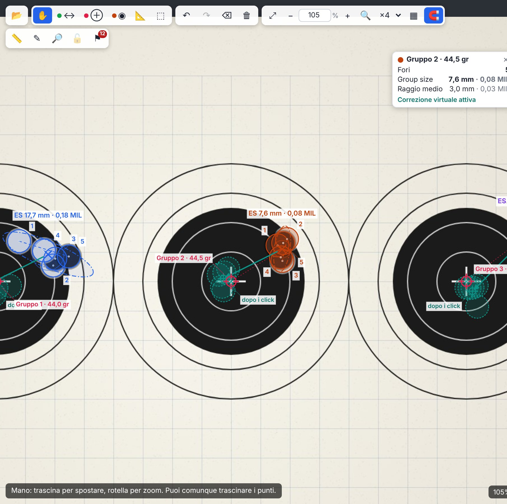
Se nella tabella dei punti indichi i click che avevi sulle torrette quando hai sparato ogni colpo (colonne «Alzo» e «Brand.»), la scheda mostra anche la dope: i click da impostare per colpire il punto mirato a quella distanza. È la base della dope card (capitolo 12).
Se hai scelto un bersaglio nelle zone di punteggio, la scheda «Punteggio» mostra il totale del gruppo. Se hai indicato il vento, la scheda «Vento» riporta velocità, direzione, componenti e scostamento orizzontale misurato.
In cima ai risultati di ogni gruppo c'è il GQI (Group Quality Index): un numero da 0 a 100 con un giudizio — Ottimo (≥ 90), Buono (≥ 75), Discreto (≥ 60), Scarso (≥ 40), Insufficiente — che dice quanto la rosata è compatta rispetto a un riferimento che scegli tu. Non è uno standard e non confronta il tuo gruppo con quello di altri tiratori: risponde alla domanda «rispetto a quello che per me è un buon gruppo, questo com'è?».
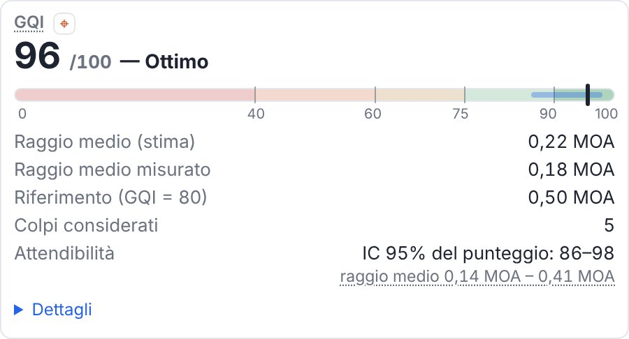
Riferimento 0,50 MOA. Un gruppo da 5 colpi ha raggio medio stimato 0,40 MOA: GQI = 100·exp[−0,223·(0,40/0,50)²] = 87, «Buono». L'intervallo 61–94 (IC 95%) dice che con 5 colpi il gruppo potrebbe essere da «Discreto» a «Ottimo»: per una decisione (cambiare carica) servono più colpi.
Il TQI (Target Quality Index), da attivare nelle impostazioni, aggiunge la centratura: TQI = 70% · GQI + 30% · AQI, dove l'AQI fa lo stesso calcolo con la distanza angolare del centro del gruppo dalla mira (pesi modificabili). Serve il punto di mira. Un GQI alto con un TQI basso vuol dire «rosata buona, da centrare con i click».
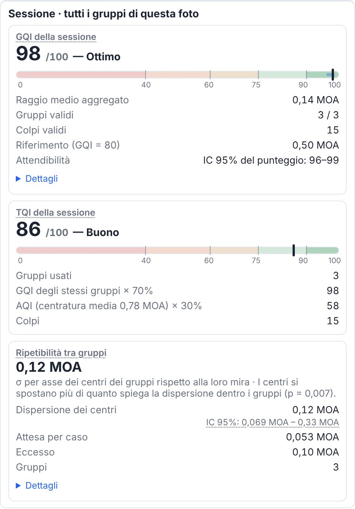
In fondo ai risultati la scheda Sessione dà il GQI di tutti i gruppi della foto, calcolato dal raggio medio di tutti i gruppi pesato per i colpi (non come media dei punteggi). Indica quanti gruppi e colpi sono stati usati e quali gruppi sono stati esclusi e perché. La ripetibilità tra gruppi è un indicatore a parte: guarda quanto si spostano i centri dei gruppi rispetto alla loro mira (tolti i click impostati) e lo confronta con quello che ci si aspetta per caso; se i centri si spostano di più, il test lo segnala. Non entra nel GQI.
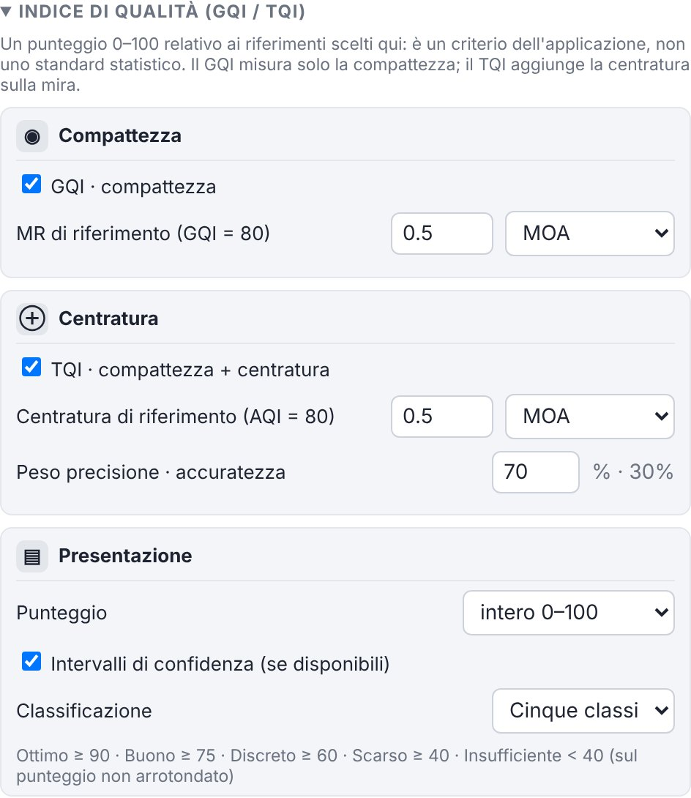
Se cambi il riferimento, cambiano tutti i punteggi mostrati. Le sessioni salvate conservano la loro valutazione originale: nello storico del confronto la vedi sotto il valore ricalcolato come «orig.».
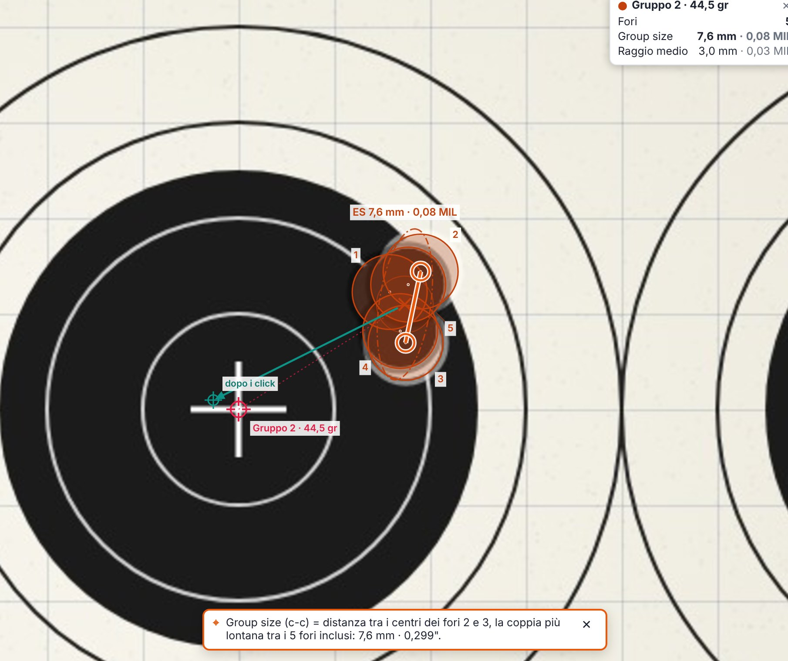
Accanto alle schede e alle righe principali (group size, bordo-bordo, H-spread e V-spread, FOM, raggio medio, CEP, R95, R99, deviazioni standard, convex hull, correzione, GQI) c'è un piccolo ⌖. Cliccandolo la foto mostra da quali fori nasce quel valore:
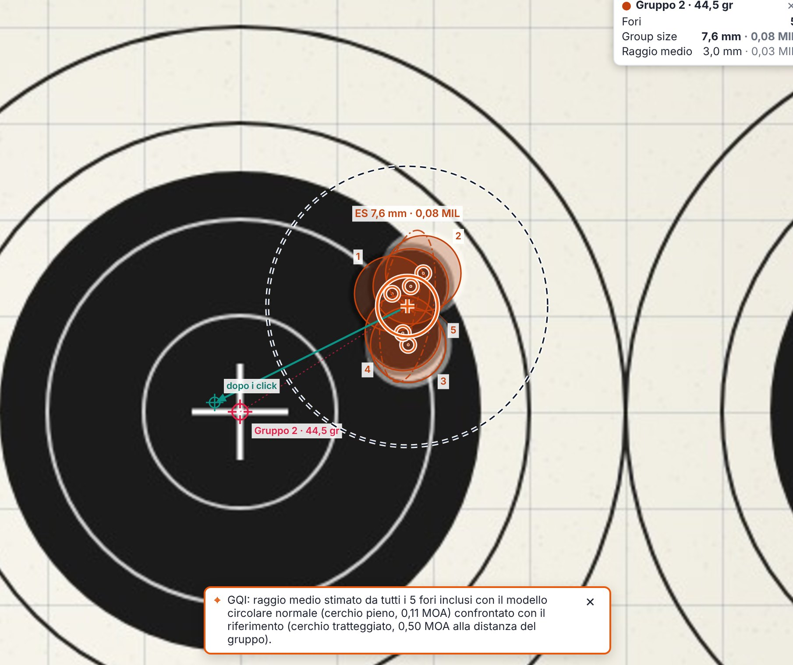
I fori esclusi sono segnati con una croce grigia e la barra dice che non sono stati usati. Esc o ✕ chiudono l'evidenziazione.
Serve soprattutto quando un numero sorprende: se il group size è grande, ⌖ ti mostra subito qual è il foro che lo allarga, senza cercarlo nella tabella.
Sotto le schede trovi due righe in più.
Incertezza di misura. Quanto potrebbero cambiare i numeri di questo gruppo per gli errori di clic e di scala (non per la statistica). L'applicazione «rimisura» migliaia di volte il gruppo spostando un po' ogni punto e guarda di quanto variano i risultati. Se l'intervallo è stretto (per esempio ES 16,9–18,5 mm) la misura è buona; se è largo, migliora la foto o la scala. I fori difficili (strappati, sovrapposti) si segnano con il pulsante ◐ nella tabella dei punti: per loro l'incertezza è tripla.
Diagnostica del modello. Alcune previsioni (CEP, R95, probabilità di colpire) suppongono che i colpi si distribuiscano «a nuvola rotonda» attorno al centro, come succede normalmente. Da 5 colpi in su l'applicazione controlla se la tua rosata rispetta questa ipotesi: se il gruppo è molto allungato o sembra avere due centri distinti, lo segnala. Con meno di 10 colpi questi controlli vedono solo i casi evidenti.
L'avviso «possibili due centri distinti» è prezioso: spesso significa che a metà gruppo qualcosa è cambiato (ottica che ha ceduto, canna che si è scaldata, cambio di posizione). Guarda nella tabella l'ordine dei colpi per capire quando.
La sezione «Punti del gruppo attivo» elenca tutti i punti del gruppo con le loro misure. Serve a controllare, correggere ed escludere.
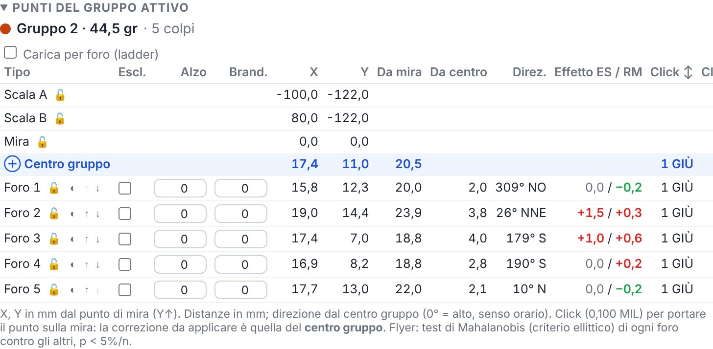
| Colonna | Significato |
|---|---|
| Tipo | Scala A/B, Mira, Centro gruppo (riga evidenziata), Foro 1, 2… Il ⚠ indica un possibile flyer; il pulsante ◐ segna un foro difficile da marcare; ↑ e ↓ spostano il foro prima o dopo nell'ordine di sparo. |
| Escl. | Spuntata, il foro resta sulla foto (tratteggiato) ma non entra nei calcoli. Tasto rapido: X sul foro selezionato. |
| Alzo · Brand. | I click che avevi sulle torrette per quel colpo. Un nuovo foro riprende quelli del precedente. |
| X · Y | Posizione in mm rispetto al punto mirato (X positivo = a destra, Y positivo = in alto). |
| Da mira · Da centro | Distanza dal punto mirato e dal centro del gruppo. |
| Direz. | Direzione dal centro del gruppo, in gradi (0° = in alto, in senso orario) e con le sigle della bussola. |
| Effetto ES / RM | Quanto quel foro allarga (in rosso) o stringe (in verde) group size e raggio medio. Per un foro escluso: che cosa succederebbe rimettendolo. |
| Click ↕ · Click ↔ | I click che porterebbero quel singolo foro sulla mira. La correzione da dare è quella della riga «Centro gruppo». |
| Punti | Il punteggio del foro, se hai scelto un bersaglio. |
Cliccando una riga il punto si evidenzia sulla foto. Al contrario, un doppio clic su un foro nella foto apre la tabella sulla sua riga, che lampeggia. Passando con il mouse sopra un foro, un riquadro mostra subito numero, distanza dalla mira, direzione a ore, click impostati e punteggio.
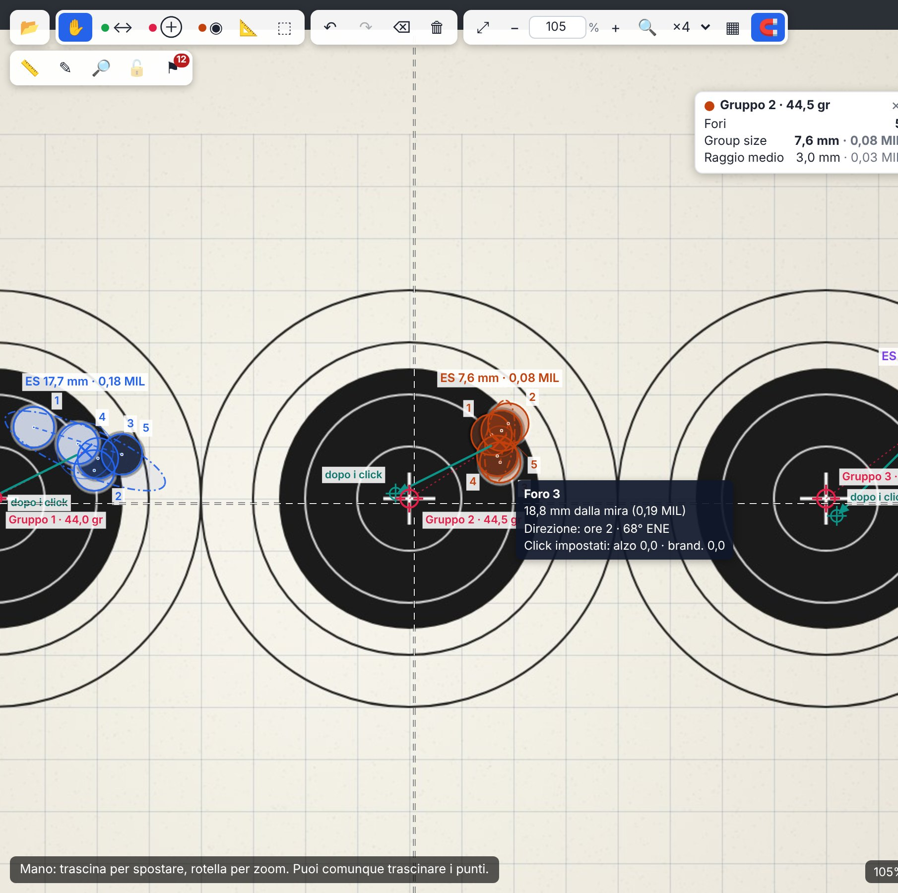
Il numero di ogni foro è l'ordine in cui lo hai cliccato, e l'applicazione lo considera l'ordine di sparo. Conta per l'analisi della stabilità colpo dopo colpo (capitolo 12). Se hai cliccato i fori in un altro ordine, correggilo con le frecce ↑ e ↓ nella colonna «Tipo»: il foro cambia numero anche sulla foto. Se non ricordi l'ordine, non importa per tutte le altre misure: group size, raggio medio, CEP e correzione non dipendono dall'ordine.
Il modo più semplice per avere l'ordine giusto è numerare a matita i fori al poligono, man mano che spari (o fotografare il bersaglio dopo ogni colpo), e poi cliccarli in quell'ordine.
Un flyer è un colpo che sembra non appartenere al gruppo. Da 5 colpi in su l'applicazione confronta ogni foro con gli altri e lo segnala con ⚠ e un cerchio arancione se è troppo lontano per essere un normale colpo di quel gruppo. Il controllo tiene conto della forma: in un gruppo allungato i colpi alle estremità dell'asse lungo non vengono segnalati, quelli «di lato» sì.
Escludere un colpo è una scelta tua, non dell'applicazione. Fallo solo se conosci il motivo: colpo «tirato», cartuccia difettosa, primo colpo a canna fredda e pulita. Escludere i colpi solo perché allargano il gruppo (i «rossi» della colonna Effetto) rende tutte le statistiche ottimiste e ti fa prendere decisioni sbagliate, per esempio scegliere una carica che non è davvero migliore.
Nella colonna «Effetto ES / RM» il foro 5 del gruppo 3 mostra «+3,1 / +0,9» in rosso: togliendolo il group size scenderebbe di 3,1 mm. Ma ricordi di aver tirato quel colpo mentre arrivava una raffica? Allora puoi escluderlo e annotarlo. Non ricordi nulla di strano? Lascialo: fa parte della tua rosata.
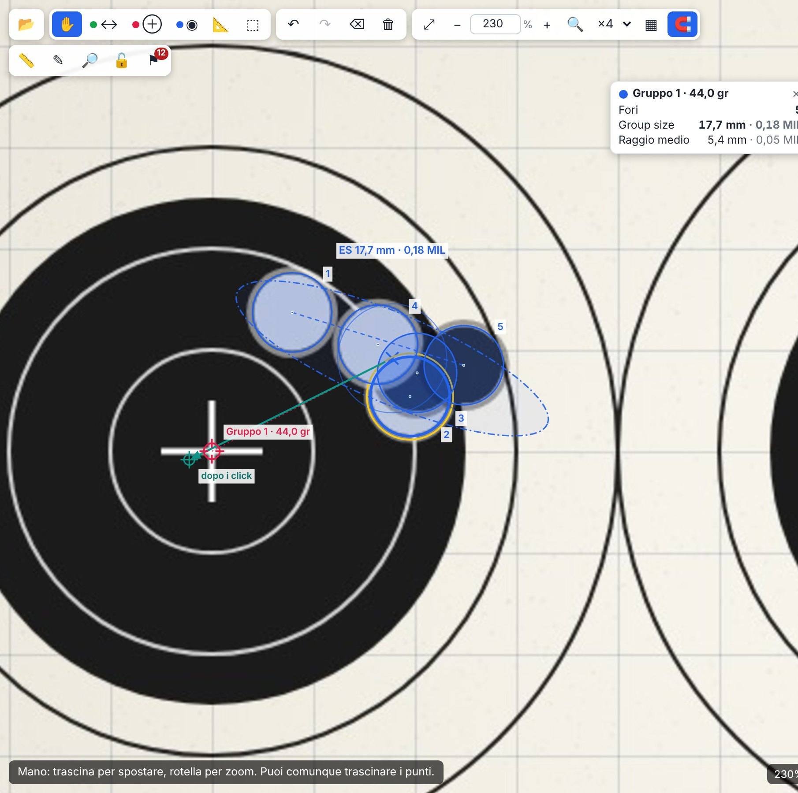
La sezione «Colpi da rivedere» (pulsante ⚑ della barra, tasto V) raccoglie i fori che meritano un'occhiata prima di fidarsi dei numeri. Ci finiscono:
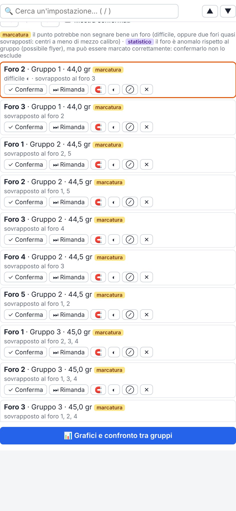
L'etichetta distingue i due tipi di problema, che non vanno confusi. Marcatura: forse il punto non è sul centro di un foro vero. Statistico: il foro è marcato bene, ma è lontano dagli altri. Per ogni colpo puoi:
| Azione | Effetto |
|---|---|
| ✓ Conferma | Il punto è giusto: il colpo esce dalla coda. Confermare un flyer non lo esclude dalle statistiche. |
| ⏭ Rimanda | Va in fondo alla coda, da rivedere dopo. |
| 🧲 · ◐ | Correggi: riaggancia il punto al centro della macchia del foro, oppure segna/togli «difficile». |
| ⊘ · ✕ | Escludi il colpo dalle statistiche (resta sulla foto) oppure elimina il punto, per esempio un foro contato due volte. |
Con ◀ ▶ (o , e .) passi al colpo precedente o successivo; ogni volta la foto si centra su di lui. Le conferme sono salvate nella sessione e si annullano con Ctrl+Z. Se i motivi di un colpo cambiano (per esempio lo sposti vicino a un altro), torna da rivedere.
Oltre a mira e fori, l'applicazione disegna sulla foto alcuni aiuti visivi. Si accendono e spengono in «Parametri di tiro».
| Disegno | Che cosa mostra |
|---|---|
| Croce rossa | Il punto mirato del gruppo. |
| Cerchi colorati numerati | I fori, con il diametro del calibro. Tratteggiati e barrati se esclusi; cerchio arancione se possibili flyer. |
| × e cerchio sottile | Il centro del gruppo e il cerchio del raggio medio. |
| Linea tratteggiata tra due fori | Il group size: congiunge i due fori più lontani. Sopra il gruppo, l'etichetta con il suo valore. |
| Freccia verde acqua | La correzione: dal centro del gruppo al punto previsto dopo i click. |
| Ellisse tratteggiata | L'ellisse di dispersione: dentro ci dovrebbe finire il 95% dei colpi (o la percentuale scelta). Mostra forma e orientamento del gruppo. |
| Poligono (convex hull) | Il poligono più piccolo che racchiude tutti i fori. La sua area è nei risultati. |
| Heatmap | Una «nuvola» colorata: più è intensa, più è probabile che lì arrivi il prossimo colpo. |
| Griglia angolare | Linee ogni 0,1 MIL (o il passo che scegli) centrate sulla mira, per leggere a occhio scostamenti in angolo. |
| Alone di incertezza | Una macchia semitrasparente attorno al centro di ogni foro: lì dentro, al 95%, c'è il centro vero. Più grande per i fori cliccati a mano e ancora di più (×3) per quelli segnati difficili ◐; più piccola con lo snap. |
| Righello e cornice | La «scala sulla foto»: un righello graduato in un angolo e le dimensioni reali dei lati della foto (Calibrazione scala). |
| Pillole N1, N2… | Le note sull'immagine, accanto al foro o al punto a cui si riferiscono. |
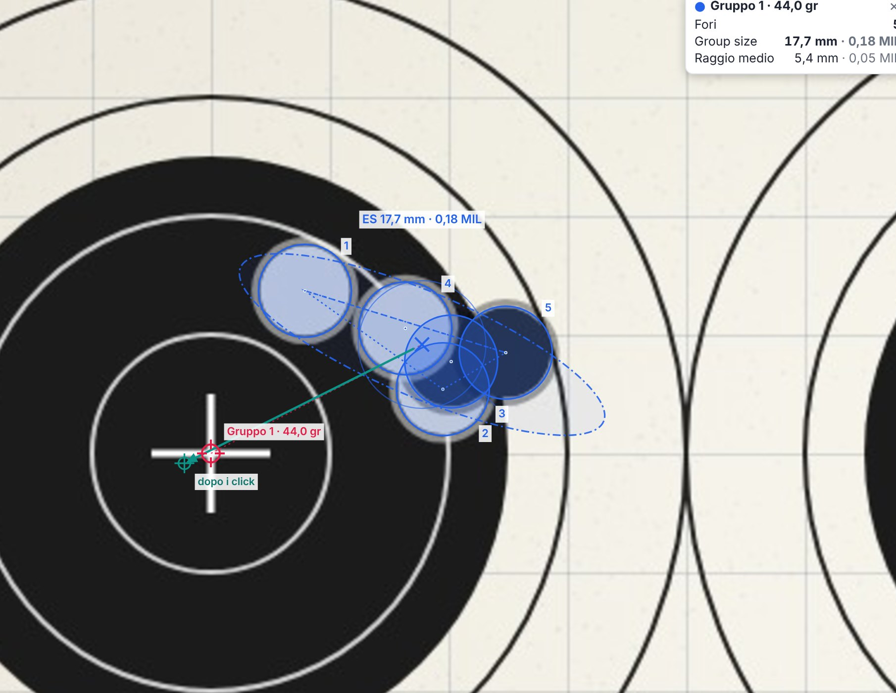
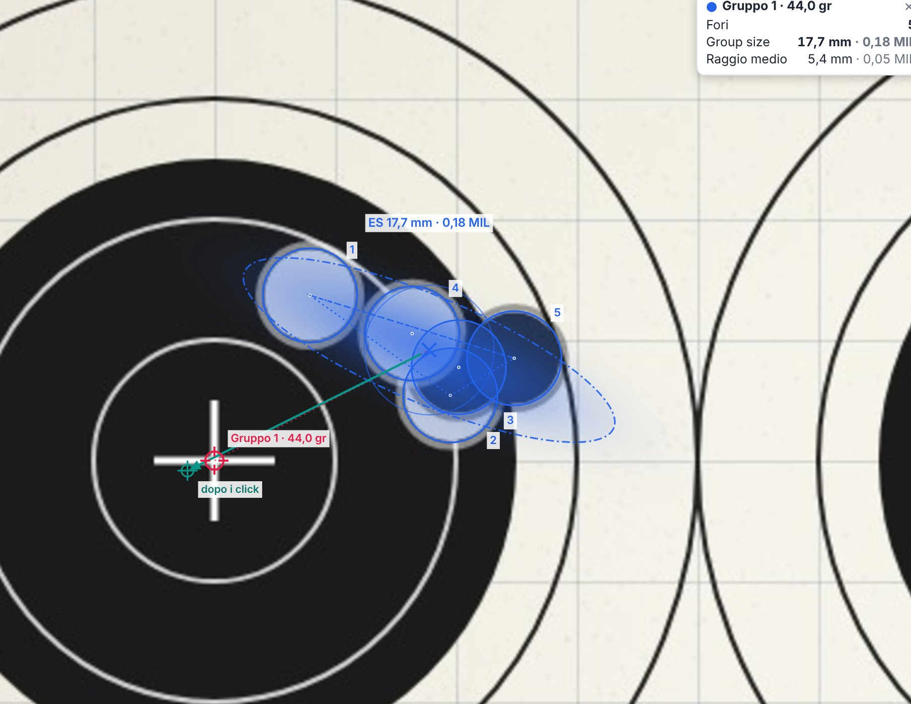
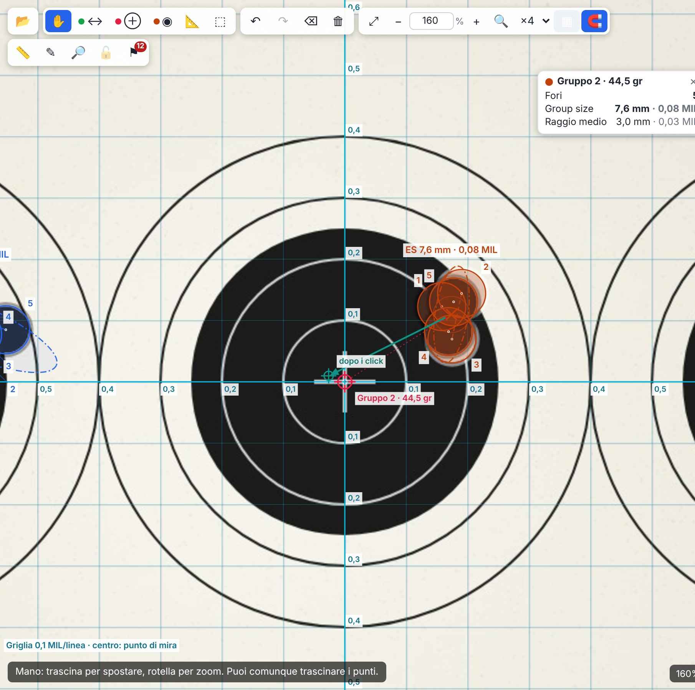
Le etichette (numeri dei fori, nomi dei gruppi, group size) si dispongono da sole per non coprire fori e croci; se non c'è posto vicino, una sottile linea le collega al loro punto.
Nell'angolo in alto a destra della foto un piccolo riquadro mostra, per il gruppo attivo, numero di fori, group size e raggio medio, aggiornati a ogni clic, più l'avviso «meno di 5 colpi – statistiche indicative». Comodo mentre marchi i fori, senza guardare il pannello. Si chiude con ✕ e si riaccende in «Parametri di tiro».
La sezione «Zone di punteggio» disegna gli anelli di un bersaglio attorno al punto di mira di ogni gruppo e calcola il punteggio di ogni foro. Puoi scegliere i bersagli ISSF (10 m aria compressa, 50 m carabina, 25/50 m pistola, 300 m), un bersaglio personalizzato (diametro del 10 e passo degli anelli), oppure una sagoma: IPSC, IDPA, silhouette metalliche, zona vitale per la caccia. Con le sagome puoi spostare e ruotare il bersaglio sulla foto.
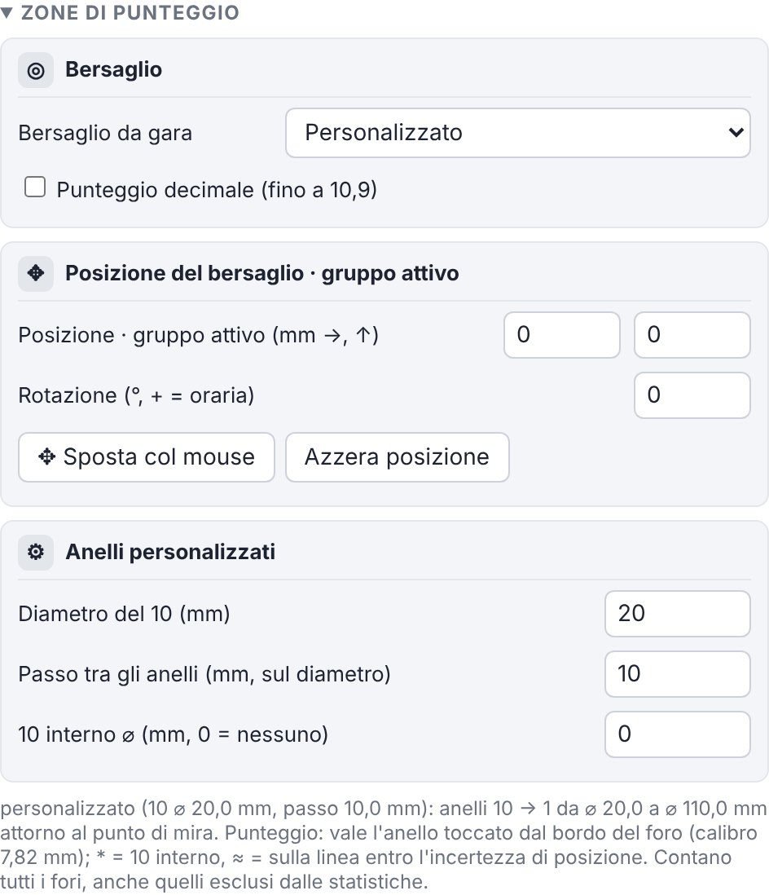
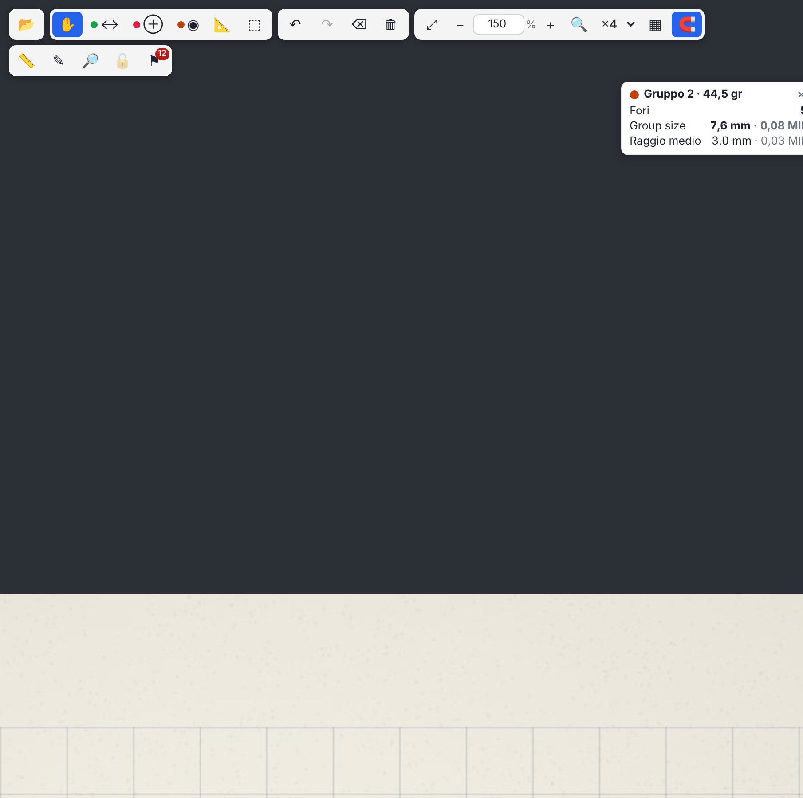
Il punteggio segue le regole delle gare: conta l'anello toccato dal bordo del foro, quindi serve il calibro giusto. I colpi «sulla linea», per cui la foto non permette di decidere con sicurezza, sono segnati con ≈: in gara decide il calibro di controllo. Per i bersagli ISSF si può attivare il punteggio decimale (10,9 e così via).
Gli anelli sono centrati sul punto mirato che hai cliccato: un errore di clic sulla mira sposta tutti gli anelli. Usa lente e croce estesa per centrarla bene.
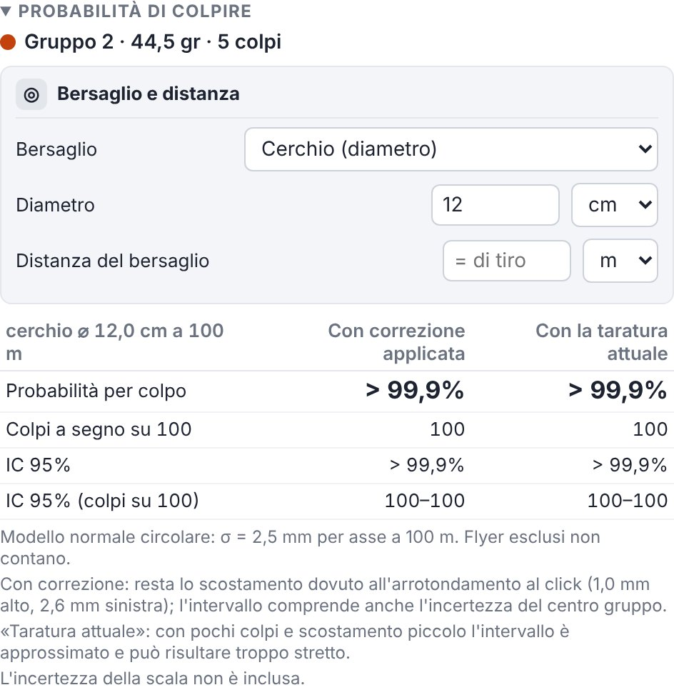
Qui fai una domanda pratica: «Con la precisione che ho mostrato oggi, quanti colpi su 100 entrerebbero in un bersaglio di questa misura?». Scegli un cerchio o un rettangolo, le sue dimensioni e la distanza (anche diversa da quella di tiro: la rosata viene ingrandita in proporzione). L'applicazione risponde con due scenari:
Un cacciatore vuole sapere se può tirare a un capriolo a 200 m (numeri indicativi). La zona vitale è circa un cerchio da 15 cm. Con la sua rosata di oggi a 100 m l'applicazione dice «con la correzione applicata: 97 colpi su 100 (IC 92–99)». Con l'ottica non tarata, invece, «84 su 100». Messaggio chiaro: prima di partire, tara l'ottica.
Anche qui c'è un intervallo di confidenza: con pochi colpi la stima è incerta. E ricorda che a 200 m conteranno anche vento e caduta, che l'applicazione non conosce: la probabilità riguarda solo la dispersione.
Il pulsante 📊 Grafici e confronto tra gruppi (tasto A) apre una vista a schermo intero. In alto scegli il gruppo attivo; Esc o «← Torna all'analisi» riportano alla foto. Passando il mouse sui punti dei grafici compaiono i valori.
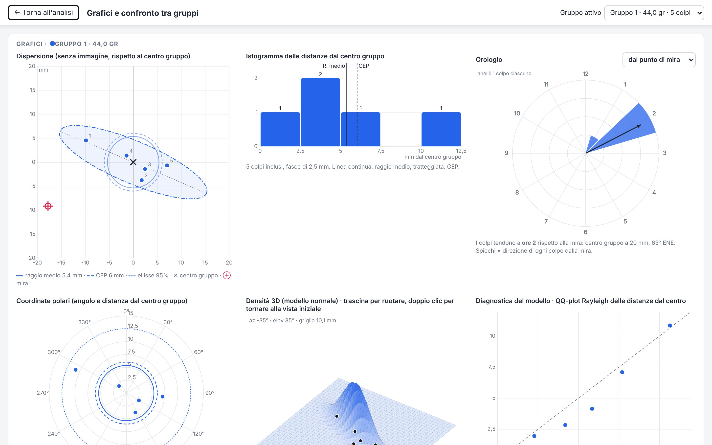
Che cosa mostra. I fori senza la foto, su un foglio a quadretti in millimetri, centrati sul centro del gruppo (la ×). La croce rossa è il punto mirato. Il cerchio pieno è il raggio medio, quello tratteggiato il CEP; l'ellisse puntinata contiene il 95% dei colpi attesi.
Come leggerlo. Guarda tre cose: quanto sono grandi i cerchi (la precisione), quanto è allungata l'ellisse e in che direzione (la forma), quanto è lontana la croce rossa dalla × (la correzione). Senza i disegni del bersaglio sotto, la forma si capisce molto meglio che sulla foto.
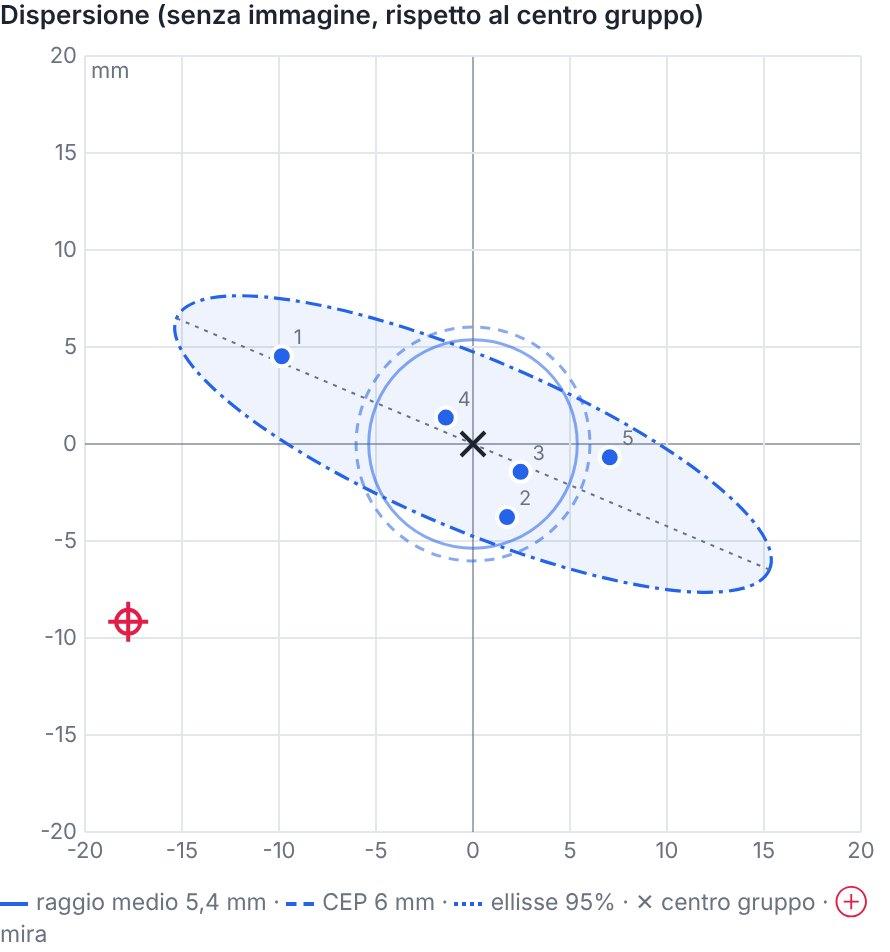
Un'ellisse molto verticale come quella dell'esempio, dopo più gruppi con la stessa munizione, è un indizio da seguire: variazioni di velocità tra un colpo e l'altro. Vale la pena controllare la costanza della carica, la seduta della palla o la temperatura delle cartucce.
Che cosa mostra. Le barre contano i fori in fasce di distanza dal centro del gruppo (o dal punto mirato, se lo scegli nel menu). La linea continua è il raggio medio, quella tratteggiata il CEP.
Come leggerlo. Una rosata «normale» ha pochi fori proprio al centro, la maggior parte a media distanza e pochi lontani. Una barra isolata molto a destra è un colpo lontano dagli altri: controlla se è un flyer. Con 5 colpi l'istogramma è solo indicativo; diventa interessante unendo molti colpi.
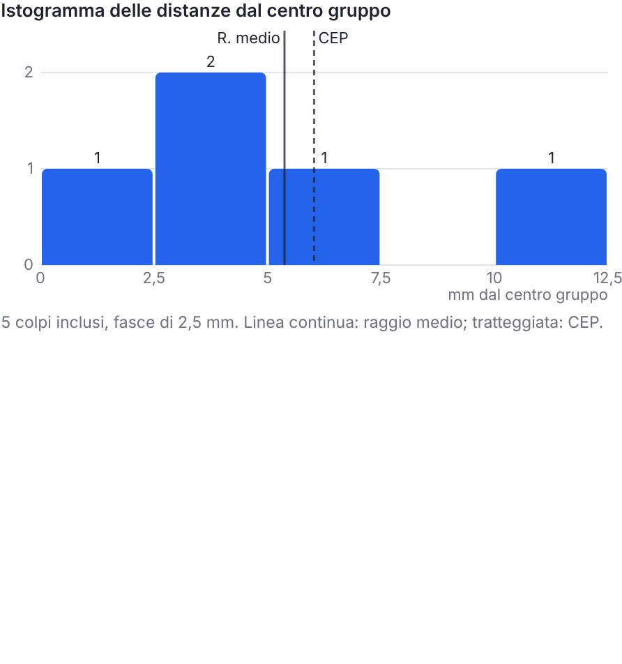
Che cosa mostra. Un quadrante a ore come quello del vento: gli spicchi indicano la direzione di ogni colpo, la freccia quella del centro gruppo. Puoi riferirlo al punto mirato (dove «tira» l'arma) o al centro gruppo (verso dove scappano i colpi).
Come leggerlo. «I colpi tendono a ore 2»: il gruppo è in alto a destra della mira. È il modo più immediato per capire la correzione senza guardare i numeri. Riferito al centro gruppo, colpi che scappano sempre nella stessa direzione indicano un difetto di tecnica ripetuto (per esempio uno «strappo» del grilletto con la pistola).
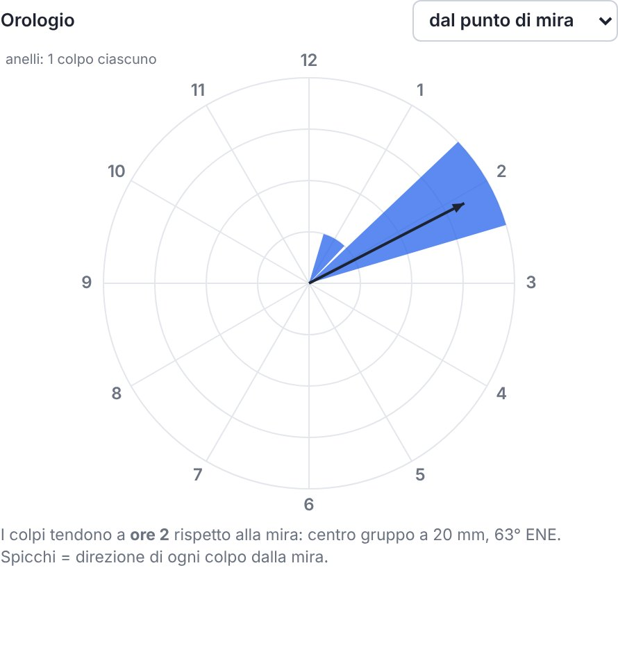
Che cosa mostra. Ogni foro con la sua direzione (angolo) e la sua distanza dal centro, prima su un cerchio e poi su un grafico «srotolato» (angolo in orizzontale, distanza in verticale). Le linee orizzontali sono raggio medio, CEP e R95 attesi.
Come leggerlo. Serve a vedere se i colpi lontani si concentrano in un settore. Attenzione: con pochi colpi è normalissimo che ci siano settori vuoti; l'applicazione non trae conclusioni da sola, e non dovresti trarne nemmeno tu con meno di 10–15 colpi.
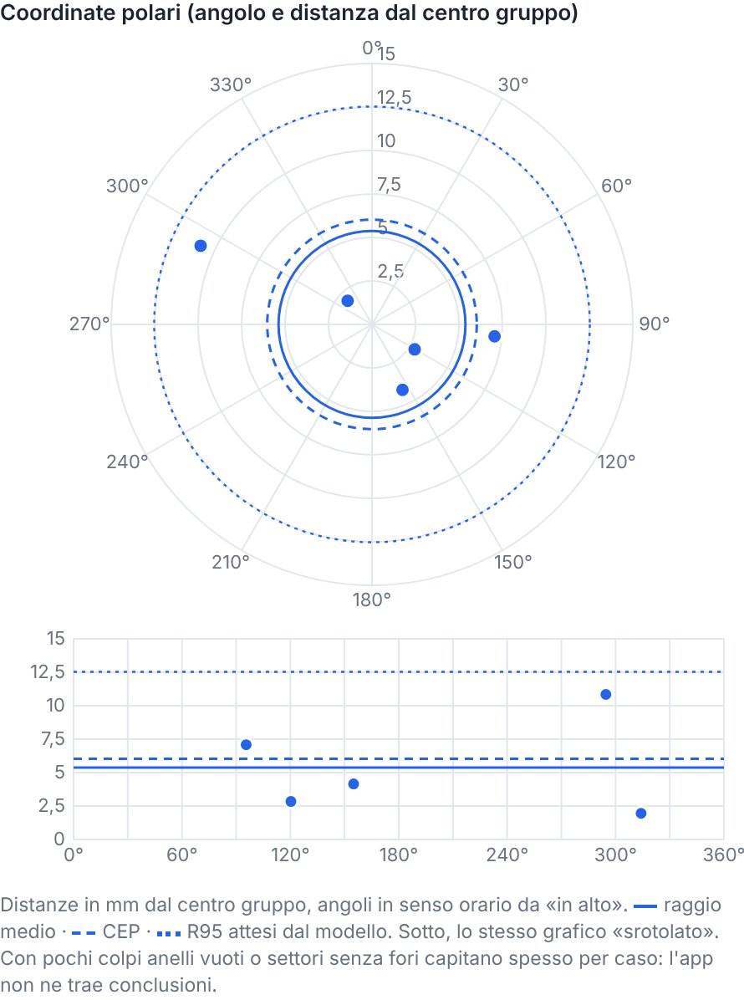
Che cosa mostra. Una superficie in tre dimensioni: l'altezza indica quanto è probabile che un colpo arrivi in quel punto. Si ruota trascinando con il mouse; un doppio clic torna alla vista iniziale.
Come leggerlo. Una montagna alta e stretta è un gruppo preciso; bassa e larga, un gruppo disperso; allungata come una cresta, un gruppo allungato. È la stessa informazione dell'ellisse, ma molto intuitiva da mostrare a chi non ama i numeri.
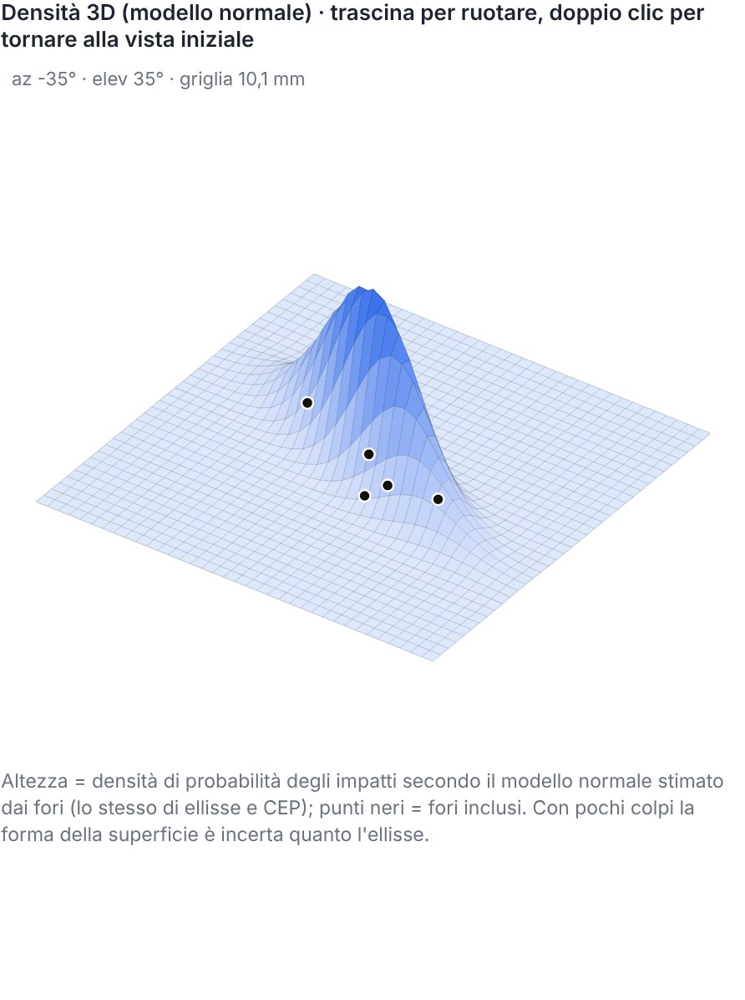
Che cosa mostra. Ogni punto è un foro: in orizzontale la distanza dal centro che il modello si aspetterebbe, in verticale quella reale, dalla più piccola alla più grande.
Come leggerlo. Se i punti stanno vicini alla diagonale tratteggiata, la rosata si comporta come previsto e CEP, R95 e probabilità sono affidabili. Un ultimo punto molto sopra la diagonale è un colpo più lontano del previsto (un possibile flyer). Una serie di punti che si allontana sistematicamente dalla diagonale indica una rosata «strana» (allungata o con due centri): il testo sotto il grafico lo spiega.
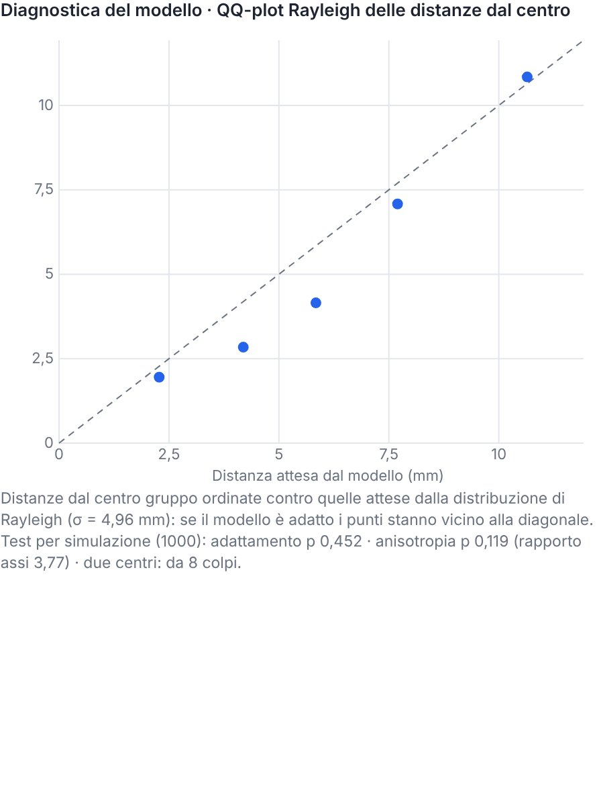
Che cosa mostra. Come cresce il gruppo colpo dopo colpo, nell'ordine di sparo: la linea spessa a gradini è il group size dei primi 2, 3, 4… colpi, quella tratteggiata il raggio medio. La fascia colorata mostra dove dovrebbe stare il group size per puro caso, se tutti i colpi venissero dalla stessa rosata.
Come leggerlo. Il group size cresce sempre aggiungendo colpi: non è un segnale di allarme. Lo diventa quando la linea resta a lungo in fondo alla fascia (gruppo «troppo bello») e poi salta in alto: l'applicazione lo controlla con un test e, se il salto è oltre il caso, scrive «il gruppo si apre dal colpo 6» con una linea rossa verticale.
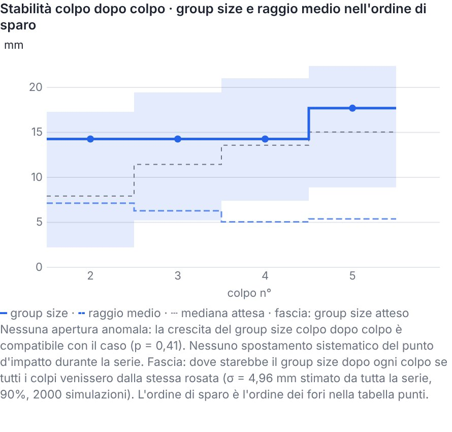
Se il gruppo si apre sempre dopo 5–6 colpi, la causa è spesso la canna che si scalda o la posizione che cede con la stanchezza: prova serie più brevi con pause, oppure annota la temperatura della canna.
Che cosa mostra. Dove si trova il centro del gruppo dopo 2, 3, 4… colpi, rispetto al punto di mira (la croce rossa). I numeri sono il numero di colpi.
Come leggerlo. All'inizio il centro «balla», poi si assesta: è normale. Se invece cammina sempre nella stessa direzione, il punto d'impatto si sta spostando durante la serie. L'applicazione lo verifica e scrive, per esempio, «0,8 mm a colpo verso l'alto».
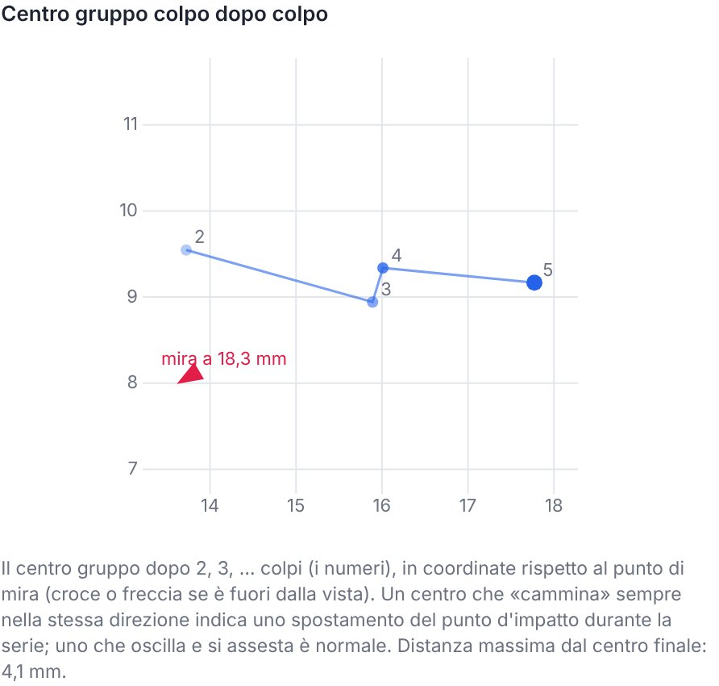
Spari 10 colpi senza pause e il centro sale di quasi un millimetro a colpo: è un indizio tipico di canna che si scalda. Prima di correggere lo zero, sparane altri a canna fredda: la correzione giusta è quella della canna nelle condizioni in cui spari il primo colpo.
Con 5–8 colpi questi controlli vedono solo gli effetti forti, e tutto ha senso solo se l'ordine dei fori è davvero quello di sparo.
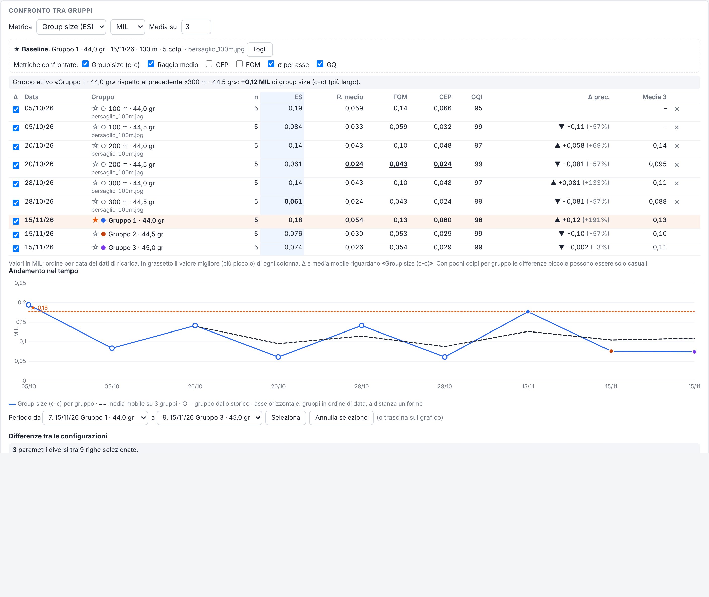
Che cosa mostra. Una tabella con tutti i gruppi della sessione e quelli importati da sessioni precedenti (lo «storico»), ordinati per data: numero di colpi, group size, raggio medio, FOM, CEP, differenza rispetto al gruppo precedente. Il menu «Metrica» sceglie il valore da confrontare, in mm o in angolo. Sotto, il grafico dell'andamento nel tempo con una media mobile (la linea tratteggiata, media degli ultimi gruppi).
Come leggerlo. Il miglior gruppo è sottolineato. La media mobile è più importante dei singoli punti: un singolo gruppo bello o brutto può essere fortuna; una media che scende per settimane è un miglioramento vero.
Con la stella ☆ (sulla riga del confronto o accanto al nome del gruppo nei risultati) scegli una baseline: il gruppo con cui confrontare tutti gli altri, per esempio il miglior gruppo della carica che usi oggi. La baseline resta nel browser da una sessione all'altra e viene salvata anche nel file di sessione. Se apri una sessione con una baseline diversa dalla tua, l'applicazione non la sostituisce: te la propone con «Usa questa». Nel riquadro sopra la tabella scegli quali metriche confrontare.
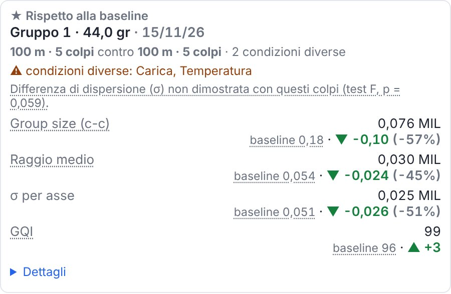
Ogni gruppo mostra la scheda Rispetto alla baseline. Le differenze sono in angolo (MIL o MOA), quindi gruppi a distanze diverse si confrontano; ▼ verde = più stretto, ▲ rosso = più largo (per il GQI il contrario: più alto è meglio). La riga del test F dice se la differenza di dispersione è dimostrata con quei colpi o può essere caso. Sopra, sempre visibili, distanza e colpi dei due gruppi; sotto, gli avvisi sulle condizioni diverse.
Il group size cresce con il numero di colpi: un gruppo da 3 colpi sembra migliore di uno da 5 anche se l'arma è la stessa. Se i due gruppi hanno un numero di colpi diverso, l'applicazione lo segnala: in quel caso confronta il raggio medio, σ o il GQI, che non dipendono dal numero di colpi.
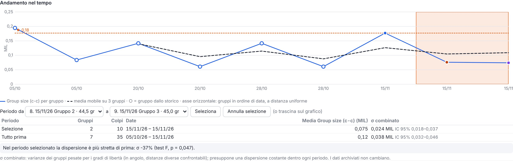
Trascina sul grafico dell'andamento (o usa i menu «Periodo da… a…») per selezionare una serie di gruppi consecutivi: l'applicazione la confronta con tutto ciò che viene prima. Per ognuno dei due periodi mostra gruppi, colpi, date, la media della metrica scelta e il σ combinato: la dispersione di tutti i gruppi del periodo messi insieme, ognuno pesato per i suoi colpi, con il suo intervallo. Sotto, il verdetto del test F: «più stretta di prima» solo se la differenza è dimostrata. Doppio clic sul grafico o «Annulla selezione» per tornare a tutto. La selezione non cambia nessun dato salvato.
Hai cambiato appoggio a metà ottobre. Seleziona i gruppi da allora: se il σ combinato è sceso del 25% con p = 0,01, il miglioramento è reale; con p = 0,4 potrebbe essere caso, e servono altri gruppi prima di concludere.
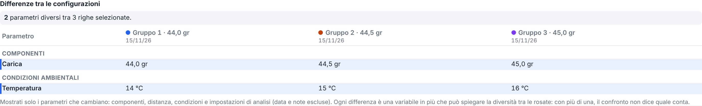
Che cosa mostra. Sotto il confronto, per le righe con la casella «Δ» spuntata, una tabella con solo i parametri che cambiano: componenti (calibro, bossolo, palla, polvere, carica, innesco, salto), distanza, condizioni (meteo, temperatura, umidità, pressione, vento, scaldacanna) e impostazioni di analisi (valore del click, metodo della scala, prospettiva, distorsione, colpi esclusi, marcatura, livello degli intervalli). Le righe in grigio sono parametri uguali dove sono stati scritti, ma mancanti in qualche gruppo: non sono differenze dimostrate.
Come leggerlo. Ogni riga è una variabile in più che può spiegare perché due rosate sono diverse. Se cambiano solo la carica e nient'altro, il confronto parla della carica; se cambiano carica, temperatura e distanza insieme, non puoi sapere quale delle tre abbia contato.
Due gruppi da 44,5 e 45,0 gr, ma il secondo tirato a 200 m e con 6 °C in più: la tabella mostra tre differenze. Il secondo gruppo è più largo in mm, ma in MIL è quasi uguale: la carica non è dimostrata migliore né peggiore. Per un test della carica ripeti le due cariche alla stessa distanza, nella stessa uscita.
È lo strumento per tenere un «diario» del tuo tiro: importa ogni sessione salvata (con ＋ Importa sessioni nello storico, file .zip o .json) e guarda se i cambiamenti (nuova ottica, nuovo appoggio, allenamento a secco) producono un effetto reale. Confronta in angolo (MOA o MIL) quando i gruppi sono a distanze diverse.
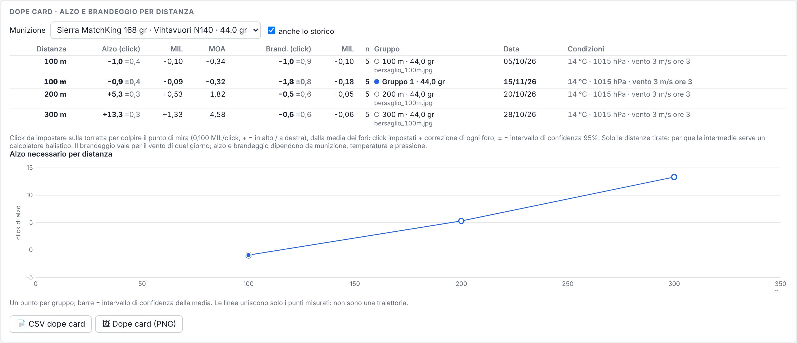
Che cosa mostra. Per ogni distanza a cui hai sparato (con i click registrati nella tabella dei punti), i click di alzo e brandeggio da impostare per colpire il punto mirato, in click, MIL e MOA, con il loro intervallo di confidenza, la data e le condizioni. Si filtra per munizione. Il grafico mostra come cresce l'alzo con la distanza.
Come leggerlo. Ogni riga è una correzione «provata sul campo», non calcolata da un programma balistico. Più gruppi a una distanza, più è affidabile. Esportabile in CSV e PNG da stampare e attaccare al calcio.
Hai tirato a 100, 200 e 300 m con la stessa munizione e la dope card dice: 100 m 0 click, 200 m +6 click, 300 m +14 click. Alla prossima uscita a 300 m imposti 14 click di alzo e sei già quasi al centro. Le distanze non tirate non vengono inventate: l'applicazione non ha un calcolatore balistico.
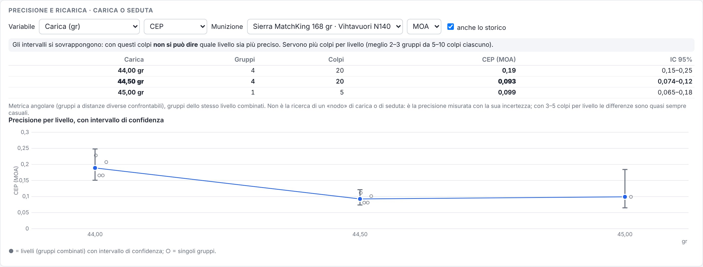
Che cosa mostra. Per ogni carica di polvere (o per ogni salto dalle righe, la profondità di seduta) il CEP o il raggio medio, unendo tutti i gruppi con quel valore, con la barra dell'intervallo di confidenza.
Come leggerlo. Cerchi il punto più basso. Ma guarda le barre: se si sovrappongono, la differenza può essere casuale e l'applicazione lo scrive. Indica come «migliore» un livello solo quando la differenza è chiara.
È il grafico per lo sviluppo di una ricarica: spari gruppi da 5 colpi con cariche crescenti di 0,3–0,5 grani e vedi dove la rosata si stringe. Se le barre si sovrappongono, aggiungi gruppi solo alle cariche promettenti invece di cambiare tutto.
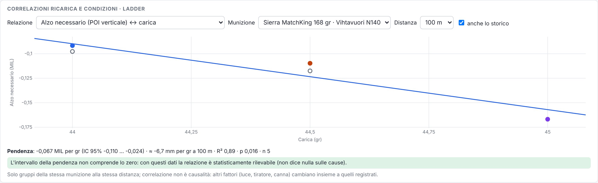
Che cosa mostra. Un grafico a punti con una retta che riassume la tendenza. Puoi scegliere: alzo necessario e carica, alzo e temperatura, brandeggio e vento laterale, V-spread e carica, V-spread e temperatura. La modalità ladder mostra l'altezza di ogni singolo foro in funzione della sua carica (si inserisce la carica foro per foro).
Come leggerlo. Sotto il grafico l'applicazione dice di quanto cambia, per esempio, l'alzo per ogni grano di polvere o per ogni grado di temperatura, e se la relazione è statisticamente chiara. Nella ladder si cercano le «zone piatte»: cariche vicine i cui colpi finiscono alla stessa altezza, segno che lì la munizione è meno sensibile alle piccole variazioni.
Con il vento laterale annotato in più sessioni, il grafico «Brandeggio ↔ vento trasversale» potrebbe dire: «circa 0,1 MIL ogni 1 m/s a 100 m». È una regola pratica tua, ricavata dalle tue munizioni, da usare in gara per correggere a occhio.
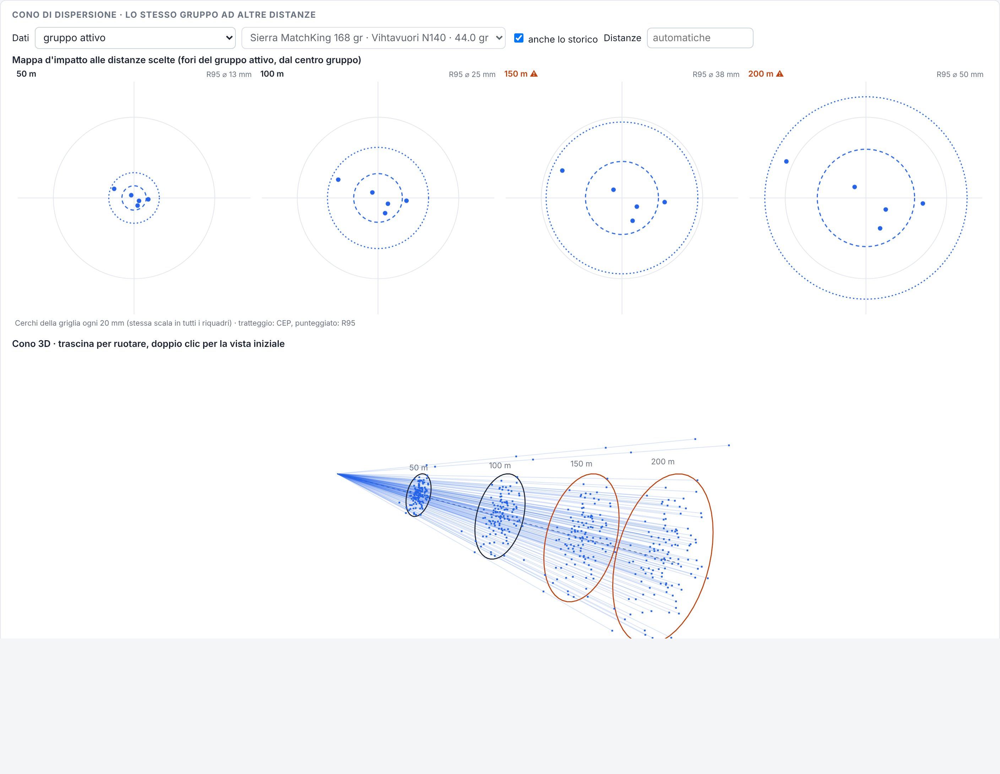
Che cosa mostra. Come si allargherebbe la rosata a distanze diverse, supponendo che la dispersione in angolo resti la stessa: un cono che parte dalla bocca dell'arma. Per ogni distanza la tabella dà CEP e R95 attesi. Si limita a due volte la distanza tirata.
Come leggerlo. Serve a farsi un'idea («a 200 m il mio gruppo sarà circa il doppio»). È un limite inferiore: a distanza maggiore vento e variazioni di velocità allargano la rosata più del semplice angolo.
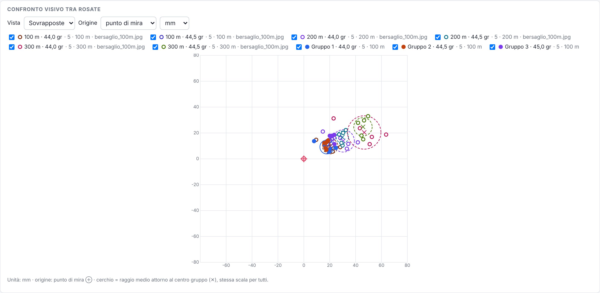
Che cosa mostra. I fori di più gruppi (della sessione e dello storico) sovrapposti o affiancati, allineati sul punto di mira o sul centro gruppo, in millimetri o in angolo.
Come leggerlo. Sovrapposti sul punto di mira vedi se lo zero è stabile tra una giornata e l'altra; sovrapposti sul centro gruppo confronti solo la forma e la grandezza. In angolo puoi confrontare gruppi a distanze diverse.
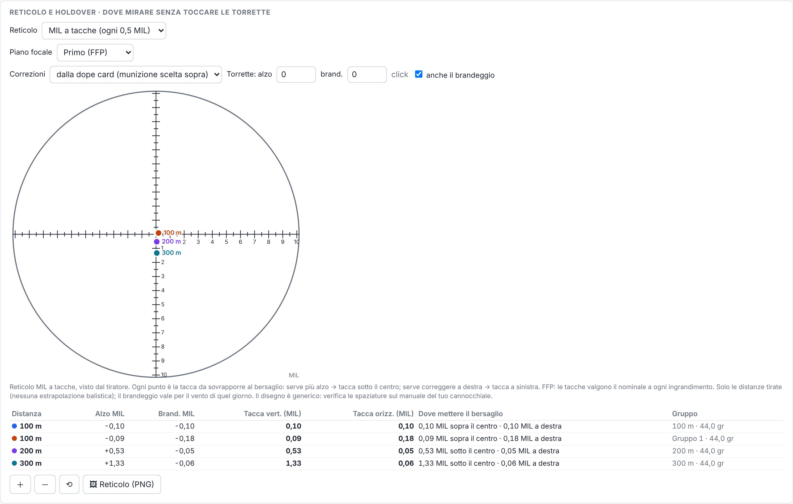
Che cosa mostra. Il disegno di un reticolo generico (MIL, MIL-DOT, MOA o personalizzato) con indicate le tacche da usare per ogni distanza della dope card, tenendo conto dei click già impostati. Funziona con reticoli al primo piano focale e, inserendo la taratura, al secondo piano focale. Si ingrandisce con la rotella.
Come leggerlo. Ti dice «a 300 m mira con la tacca 1,4 MIL sotto il centro» invece di girare le torrette: utile nelle gare con bersagli a distanze diverse. Esportabile in PNG da tenere sul telefono.
La sezione «Gestione immagine» corregge le foto non perfette. Ha quattro riquadri, uno per ogni operazione: rotazione, ritaglio, distorsione dell'obiettivo e correzione prospettica.
Se la foto è storta, «alto» e «destra» non coincidono con quelli del bersaglio e la correzione mescolerebbe alzo e brandeggio. Ruota di 90° con i pulsanti, scrivi un angolo, oppure usa 📐 Raddrizza con 2 punti (tasto 5): clicchi due punti su una linea del bersaglio che deve essere orizzontale o verticale e la foto si raddrizza. I punti già inseriti ruotano con la foto; le distanze non cambiano.
Per togliere le parti inutili della foto premi ✂ Ritaglia, trascina un rettangolo attorno alla parte da tenere e premi Invio (o ✓ Applica ritaglio). Mire e fori devono restare dentro il rettangolo; i punti della scala possono restare fuori, perché la scala è già calcolata e non cambia.
Il ritaglio è definitivo: la nuova foto incorpora rotazione e correzioni e tutte le misure restano identiche. Fino a quando non carichi un'altra foto puoi tornare indietro con ↶ Annulla ritaglio. Per conservarlo, salva la sessione in ZIP (o in JSON con l'immagine inclusa).
I grandangoli dei telefoni curvano le linee vicino ai bordi (le righe dritte diventano «a botte»). Con Calibra da linee clicchi almeno 3 punti lungo 2 o più linee che nella realtà sono dritte (bordi del foglio, righe della griglia), poi Calcola. I coefficienti si possono salvare con un nome (per esempio il modello del telefono) e riusare.
Per una foto scattata di sbieco: scegli le dimensioni reali di un rettangolo presente nella foto (un foglio A4 è perfetto; ci sono anche i quadrati da 30 e 100 mm, comodi con le griglie stampate), premi ⬚ Correggi con 4 punti (tasto 6) e clicca i quattro angoli. La foto viene «raddrizzata» come se fosse stata scattata di fronte, e la scala viene impostata dal rettangolo stesso.
Queste correzioni non fanno miracoli: un foglio piegato o ondulato non si raddrizza. La foto fatta bene, dritta e con il foglio piano, resta la soluzione migliore.
Quattro strumenti aiutano a lavorare con calma su una foto già misurata: il blocco degli elementi, le note, il righello libero e la finestra di dettaglio. Nessuno di essi cambia le misure.
Dopo aver sistemato con cura un punto è facile spostarlo per sbaglio con un trascinamento, o cancellarlo con un tasto destro di troppo. Seleziona il punto (un clic) e premi K, oppure usa il lucchetto 🔓 nella colonna «Tipo» della tabella dei punti; per la scala e il riferimento di controllo ci sono i pulsanti nella sezione «Calibrazione scala».
Premi ✎ Nota (tasto N) e clicca un foro o un punto qualsiasi del bersaglio: compare una pillola numerata N1, N2… e nella sezione «Note sull'immagine» scrivi il testo (un colpo partito male, un foro strappato, la luce, una raffica di vento).
📏 Righello (tasto R) misura la distanza tra due punti qualsiasi, senza creare fori e senza toccare la scala. La misura compare sulla foto e nella barra in basso in millimetri, pollici, MOA e MRAD (alla distanza del gruppo attivo), con l'angolo della linea rispetto all'orizzontale. Un nuovo clic inizia una nuova misura; Esc chiude lo strumento e la misura sparisce.
Vuoi sapere quanto è grande il visuel nero o se due fori stanno entro 1 MOA? Misurali con il righello: a 100 m 1 MOA è 29,1 mm. È anche il modo più rapido per controllare la scala su un riferimento della foto senza creare il riferimento di controllo.
🔎 Dettaglio (tasto D) apre una finestra che mostra sempre ingrandita la stessa zona, mentre la vista principale resta libera: puoi guardare l'intero bersaglio e il bordo di un foro nello stesso momento. Con 🎯 scegli il punto da osservare cliccando sulla foto; dentro la finestra trascini per spostarlo e la rotella (o − e +) cambia l'ingrandimento. La finestra si sposta trascinando la barra del titolo e si ridimensiona dall'angolo in basso a destra; la sua posizione viene ricordata. Sulla foto un rettangolo azzurro tratteggiato mostra la zona osservata.
In «Calibrazione scala», con la scala impostata, la casella «Scala sulla foto» (attiva per default, con il solo righello) disegna un righello graduato in un angolo e/o una cornice con le tacche e le dimensioni reali dei lati della foto. Righello e cornice sono in scala con il bersaglio anche quando ingrandisci, e con «Anche in Result Card e report» compaiono anche nelle immagini esportate, riferiti all'area ritagliata, con le dimensioni della foto intera. Chi guarda la Result Card tra un anno capisce subito quanto era grande il bersaglio.
In «Parametri di tiro», «Alone di incertezza dei fori» disegna attorno al centro di ogni foro una macchia semitrasparente: è la zona in cui, al 95%, si trova il centro vero, calcolata dall'incertezza di marcatura (a mano o con lo snap, ×3 per i fori segnati difficili ◐). Così vedi a colpo d'occhio quali fori sono marcati con precisione e quali no. È solo un disegno: coordinate e calcoli non cambiano; l'effetto sui risultati è nella riga «Incertezza di misura».
L'alone non «vede» un bordo strappato da solo: dipende da come hai marcato il foro. Se un foro è strappato o sovrapposto, segnalo come difficile con ◐ nella tabella dei punti.
🗜 Salva sessione ZIP crea un unico file con dentro la foto originale, tutti i punti, i parametri, i dati di ricarica e due file per Excel (fori e gruppi). È il file da conservare: lo riapri con 📂 Carica sessione (o trascinandolo sulla finestra) e lo puoi importare nello storico del confronto o nell'archivio. Puoi aprirlo anche con Esplora risorse, come qualsiasi ZIP, per guardare la foto o i CSV.
💾 Salva sessione JSON salva gli stessi dati in un file di testo. Con «Includi l'immagine nella sessione» spuntato contiene anche la foto; senza, per riaprirlo devi prima caricare la stessa foto. È il formato delle versioni precedenti, sempre leggibile.
Il pulsante 🖼 Esporta Result Card (PNG), nella sezione «Dati» insieme al report e al menu «Gruppo attivo / Tutti i gruppi», crea un'immagine riassuntiva del gruppo attivo o di tutti i gruppi, perfetta da mandare via chat o pubblicare.
📑 Report PDF crea un documento A4 completo, con testo vero: puoi selezionarlo, copiarlo in un'email e cercarlo, ed è nitido in stampa. Contiene:
Il PDF usa i caratteri standard presenti in ogni lettore PDF: per questo alcuni simboli matematici sono scritti a parole (per esempio «sigma» invece di σ). I titoli sono anche segnalibri, per saltare subito al gruppo che ti interessa.
📄 CSV fori e 📄 CSV gruppi si aprono con Excel o LibreOffice (in italiano usano il punto e virgola e la virgola decimale). 📋 Copia risultati (testo) copia un riepilogo da incollare in un messaggio.
Il lavoro viene salvato nel browser poco dopo ogni modifica: se chiudi per errore, alla riapertura l'applicazione propone «Ripristina». Ogni salvataggio di sessione viene anche aggiunto all'archivio del browser; 🗜 Esporta archivio (ZIP) crea un unico file con tutte le sessioni e un riepilogo di tutti i gruppi.
Salvataggio automatico, archivio e profili stanno nel browser: si perdono cancellando i dati di navigazione e non passano da un computer all'altro. I file che salvi tu (ZIP, JSON) sono la vera copia di sicurezza.
Vuoi sapere quanto è precisa tutta la catena (stampa, foto, clic, calcoli)? 🎯 Bersaglio di prova (PDF) crea un bersaglio da stampare con fori disegnati in posizioni note. Lo stampi al 100%, lo fotografi, lo misuri come un bersaglio vero e premi ✓ Verifica il gruppo attivo: l'applicazione confronta le tue misure con i valori esatti e ti dice di quanto sbagli, foro per foro.
Queste scelte vengono ricordate dal browser, non dalla sessione.
| Azione | Come |
|---|---|
| Spostare la foto | Trascina lo sfondo (strumento Mano) o tieni premuto il tasto centrale |
| Ingrandire | Rotella del mouse, campo dello zoom nella barra o tasti +/−; Shift+rotella cambia l'ingrandimento della lente |
| Spostare un punto | Trascinalo |
| Eliminare un punto | Tasto destro sul punto, oppure selezionalo e premi Canc |
| Eliminare l'ultimo foro | Backspace |
| Foro sopra un punto esistente | Alt+clic |
| Escludere/includere il foro selezionato | X |
| Bloccare/sbloccare l'elemento selezionato | K |
| Righello · nota · finestra di dettaglio | R · N · D |
| Strumenti | 1 Mano · 2 Scala · 3 Mira · 4 Foro · 5 Raddrizza · 6 Prospettiva · Esc annulla lo strumento |
| Annulla / ripristina | Ctrl+Z / Ctrl+Y |
| Vista e aiuti | F adatta · L lente · G griglia · M snap · T tema |
| Finestre | A grafici e confronto · H help tecnico · Esc chiude |
| File | Ctrl+O apri foto · Ctrl+S salva sessione |
Una tabella da consultare quando ti chiedi «se cambio questo, che cosa si muove?».
| Dato inserito | Risultati che cambia | Grafici e altro |
|---|---|---|
| Scala (2 punti + distanza nota) | Tutte le misure in mm, pollici, MOA, MIL; correzione in click; punteggio; probabilità | Tutti i grafici in mm o angolo; semaforo; controllo dei fori; inquadratura |
| Distanza di tiro (per gruppo) | Valori in MOA e MIL; correzione in click; dope | Dope card, cono, reticolo, confronti in angolo, correlazioni |
| Calibro | Bordo-bordo; punteggio (anello toccato); controllo diametro fori | Cerchi dei fori e del cursore; snap |
| Valore e unità del click | Solo il numero di click (correzione, tabella punti, dope) | Dope card e reticolo in click |
| Punto di mira | Scostamento, correzione, punteggio, «Da mira», probabilità con taratura attuale | Croce rossa e freccia; orologio; anelli e sagome; confronto visivo sulla mira |
| Ordine dei fori (↑/↓) | Nessuna misura: solo l'analisi colpo dopo colpo | Stabilità e centro colpo dopo colpo, scheda «Stabilità» |
| Fori (posizione) | Tutto: misure, statistiche, centro, correzione, flyer, diagnostica | Tutti i grafici del gruppo; confronto; ricarica; correlazioni |
| Esclusione di un foro | Misure e statistiche senza quel foro (il punteggio lo conta comunque) | Grafici, confronto, CSV (il foro resta elencato come escluso) |
| Foro difficile ◐ | Solo l'incertezza di misura | — |
| Click impostati per foro | Dope del gruppo | Dope card, reticolo, ladder |
| Carica / salto dalle righe | — | Precisione e ricarica, correlazioni, ladder, filtri per munizione |
| Temperatura | — | Correlazioni (alzo e V-spread con la temperatura) |
| Vento (velocità, ore) | Scheda Vento | Correlazione brandeggio ↔ vento trasversale |
| Livello di confidenza | Larghezza di tutti gli intervalli | Barre dei grafici di ricarica e dope |
| Ellisse, hull, heatmap, griglia, etichette, freccia | Nessuno (solo disegno; l'area dell'hull compare nei risultati) | Disegni sulla foto e nella Result Card |
| Blocco, gruppi nascosti, note, righello, dettaglio, scala sulla foto, alone | Nessuno | Solo la foto (e, per note e scala sulla foto, Result Card e report) |
| Rotazione, prospettiva, distorsione, ritaglio | Direzioni «alto/destra», quindi correzione e H/V-spread; la prospettiva anche le distanze | Tutti i grafici orientati |
| Che cosa vedi | Causa probabile e rimedio |
|---|---|
| Misure enormi o minuscole, cerchio del foro grande come il visuel | Distanza nota o unità della scala sbagliata (mm al posto di cm). Controlla «Calibrazione scala» e l'inquadratura indicata. |
| Semaforo rosso «i fori misurano il 40% del calibro» | Scala o calibro sbagliati: verifica entrambi. |
| Semaforo rosso per il diametro dei fori con un gruppo molto stretto | I fori che si toccano vengono misurati come una sola macchia. Controlla la scala con il «Riferimento di controllo»: se torna, l'avviso è da ignorare. |
| Correzione nella direzione sbagliata | Foto ruotata o capovolta: raddrizzala. Oppure hai cliccato la mira di un altro visuel. |
| Click raddoppiati o dimezzati rispetto alla realtà | Valore del click sbagliato (0,1 MIL contro 0,05, 1/4 MOA contro 1/8), oppure distanza sbagliata. |
| Non riesco a mettere un foro sopra un altro | Il clic prende il punto esistente: usa Alt+clic. |
| Il punto si aggancia nel posto sbagliato | Lo snap ha trovato un'altra macchia (una riga spessa, un numero): clicca con Alt o spegni lo snap (M). |
| «La sessione non contiene l'immagine» | Hai salvato un JSON senza foto: carica prima la stessa foto, poi la sessione. In futuro usa la sessione ZIP. |
| Le statistiche sono in rosso «poco affidabili» | Meno di 5 colpi: non è un errore, è un avviso. Spara gruppi più numerosi. |
| Le scorciatoie da tastiera non funzionano | Il cursore è in un campo di testo del pannello: clicca sulla foto. |
| Ho perso i profili o l'archivio | Sono nel browser: si perdono cancellando i dati di navigazione o cambiando browser. Esporta i profili e salva le sessioni su file. |
| Termine | Significato, in parole semplici |
|---|---|
| Rosata, gruppo | L'insieme dei fori sparati mirando allo stesso punto. |
| Punto di mira (POA) | Il punto che hai mirato. |
| Centro gruppo (POI) | La posizione media dei fori: dove l'arma manda in media i colpi. |
| Group size (ES) | Distanza tra i centri dei due fori più lontani. |
| Bordo-bordo | Group size + calibro: quello che misuri con il calibro dall'esterno dei fori. |
| Raggio medio | Distanza media dei fori dal centro gruppo. Più stabile del group size. |
| Baseline | Il gruppo di riferimento scelto con ☆, con cui l'applicazione confronta gli altri gruppi, anche nelle sessioni successive. |
| σ combinato | La dispersione di più gruppi messi insieme, ognuno pesato per i suoi colpi: serve a confrontare due periodi. |
| H-spread, V-spread | Larghezza e altezza del gruppo. |
| FOM | Media di larghezza e altezza. |
| CEP | Raggio del cerchio che conterrà metà dei prossimi colpi. |
| R95, R99 | Raggi dei cerchi per 95 e 99 colpi su 100. |
| σ (sigma) | La «misura base» della dispersione da cui l'applicazione ricava CEP, R95 e probabilità. |
| Intervallo di confidenza (IC) | L'intervallo in cui, con buona probabilità, sta il valore vero, visto che i colpi sono pochi. |
| Flyer | Colpo che sembra non appartenere al gruppo. |
| MOA | Minuto d'angolo: circa 29 mm a 100 m, circa 1 pollice a 100 yard. |
| MIL (mrad) | Milliradiante: 1 mm ogni metro, quindi 10 cm a 100 m. |
| Click | Uno scatto della torretta dell'ottica: di solito 0,1 MIL o 1/4 MOA. |
| Alzo, brandeggio | Correzione verticale e orizzontale delle torrette. |
| Dope | I click da impostare per centrare a una certa distanza. |
| Holdover | Mirare con una tacca del reticolo invece di girare le torrette. |
| Ladder, OCW | Prove di carica con cariche crescenti per trovare la zona meno sensibile alle variazioni. |
| Salto dalle righe | Distanza tra la palla e l'inizio della rigatura con la cartuccia camerata (profondità di seduta). |
| Ellisse di dispersione | L'ovale che contiene una certa percentuale di colpi attesi; mostra la forma del gruppo. |
| Convex hull | Il poligono più piccolo che racchiude tutti i fori. |
Per le formule e le spiegazioni tecniche complete c'è l'help tecnico integrato (tasto H), con glossario, formule ed esempi svolti calcolati dall'applicazione stessa.